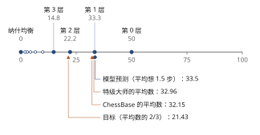
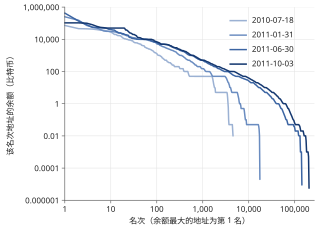
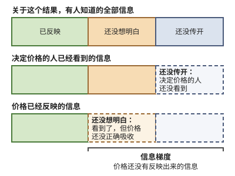
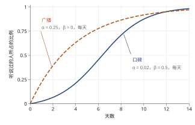
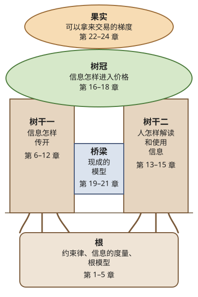

第 1 章 信息梯度：一个交易者的直觉
1998 年 5 月 4 日，一只生物科技股收盘时比上周五的收盘价高出 330%；在这之前的周日，一份报纸在头版登了一篇报道，所载的信息几乎就是这份报纸前一年 11 月报道过的。这一章从那一天讲起，接着讲三个用数据做的检验：6,112 名国际象棋棋手参加的一场猜数比赛（工作论文版的数字），从谁持有多少枚币来读比特币的价值，以及数一数关税威胁有多少次兑现了。然后引出全书的核心概念，信息梯度（information gradient），也就是价格还没有反映出来的信息。这一章说明交易者怎样从梯度上赚钱，为什么方向读对了也可能亏钱，梯度怎样随着消息传开而一点点消失，以及从物理借来的两个图像在哪里失效。一个图像是热量从高温处流向低温处；另一个是麦克斯韦妖（Maxwell’s demon），一个想象出来的生灵，看得见单个分子并把它们分拣开。正文只用到高中数学；推导放在数学框里，供量化读者看，这一章的两个数学框集中在 1.11 节，全书各处的数学框都可以跳过。
1.1 EntreMed 的两次上涨
EntreMed 是一家小型生物科技公司，持有一种可能治愈癌症的方法的商业化权利，这种方法由哈佛的科学家 Judah Folkman 领导的团队研发。同一项科学成果让它的股价两次大涨。这里的叙述依据 Huberman 与 Regev（2001）。1
1997 年 11 月 27 日，《自然》（Nature）发表了 Folkman 团队的成果，封面头条是“无耐药性的癌症疗法”（Resistance-free cancer therapy）。《纽约时报》（New York Times）的报道登在 A28 版，这篇报道和 CNN、CNBC 都提到了 EntreMed，股票代码 ENMD。股市因感恩节休市。11 月 28 日周五，ENMD 收于 15.25 美元，两天前是 11.875 美元，涨了 28.4%。
1998 年 5 月 3 日周日，《纽约时报》就这项研究登了第二篇报道，用 Huberman 与 Regev 的话说，它给出的“几乎就是报纸 11 月报道过的信息，只是醒目得多”，登在头版左上角。文中最热情的一段引了诺贝尔奖得主 James Watson 的话：“Judah 两年之内就会治愈癌症”。后来有报道说，Watson 否认说过这句话。
报道见报前的那个周五，ENMD 收于 12.063 美元。5 月 4 日周一，它开盘 85 美元，收盘 51.81 美元，收益率是 330%。那一天，纳斯达克生物科技综合指数（Nasdaq Combined Biotechnology Index）的成分股，不算 ENMD，平均涨了 7.5%，其中 7 只涨幅超过 25%，成交量是日均成交量的 50 倍，可是在新闻数据库里检索，5 月 1 日到 5 月 4 日没有一条提到这几家公司。
ENMD 当周收于 33.25 美元；周一的涨幅已经回吐了将近一半（本书的计算）。直到 1998 年 8 月下旬，它的收盘价才跌破 20 美元。1998 年 11 月 12 日，《华尔街日报》（Wall Street Journal）在头版报道，其他实验室没能重复出这些结果，ENMD 当天跌了 24%，收于 24.875 美元，仍然是 5 月 1 日价格的两倍多。
Huberman 与 Regev 的读法带着保留：市场“对 1997 年 11 月下旬发表的硬新闻（hard news）反应不足”，而对 5 月 3 日那篇文章的“大张旗鼓的宣传”则“过度反应”，这里的硬新闻指已经发表的科学成果本身。5 月 4 日的上涨有一部分是暂时的，但在他们的读法里，“其中相当大的一部分是永久的”。我们这样理解“反应不足”：它立足于持续下来的那一部分，一次没有新科学内容的上涨如果有很大一部分持续下来，11 月的上涨就太小了；两位作者没有估计正确的反应应该有多大（本书的判断）。他们提醒，ENMD“只是一家公司”，它所处的情形“不太可能重演”，而且这是一个极端的案例（本书的判断）。这里用它，是因为它提出了三个贯穿全书的问题。
第一个问题是：同样的信息为什么让价格动了两次，第二次又大得多。除了专家的评论，变了的是看到消息的人有多少、在哪里看到：11 月在 A28 版，5 月在头版顶端（本书的判断）。经济学家把这种醒目程度叫作显著性（salience），它是有限注意（limited attention）的一种形式：人能注意的东西有限，所以会漏看一些公开的消息，看到的也有一些没有据此行动（1.6.5 节）。
第二个问题是：自己没有消息的生物科技股为什么也涨了。Huberman 与 Regev 写道，“那种乐观传染开了”，我们把这读作情绪（sentiment）的传染（contagion）：没有新信息作依据的乐观，从一只股票的投资者传到其他股票的投资者（本书的判断；第 13 章）。第三个问题是：懂这项科学的投资者，为什么没有把价格压回去。5 月 10 日，《纽约时报》写道，专业投资者早就知道这项研究，并且“已经把它反映在上涨前约每股 12 美元的价格里”，可价格直到 8 月下旬都在 20 美元以上。1.6.3 节以套利限制（limits to arbitrage）为名给出几种候选解释：资本、交易对手、卖空（short selling，卖出借来的股票）和时间上的约束，这些约束能让明显的错价维持下去。大样本研究也发现了消息与价格之间相关的滞后（1.6 节和 1.8 节）。2
1.2 用数据做的三个检验
三个检验放在定义之前，限度都写在各自旁边。每个检验都给交易者必须判断的一件事配上一个数字：别人会猜多少，一种币的网络值多少，以及一个威胁能信几分（本书的判断）。
1.2.1 6,112 名棋手的猜数比赛
一位很快就要卖出的交易者，得猜别的交易者愿意出多少钱；猜数比赛把这种推理单独拿出来检验（本书的判断）。Bühren 与 Frank（2012）在网上办过一场：2009 年 6 月，6,112 名国际象棋棋手接受了贴在国际象棋网站 ChessBase 上的邀请，参加了比赛（工作论文版的数字）。每人报一个 0 到 100 之间的数，报的数最接近全体报数平均数三分之二的人获胜。经济学家把这种比赛叫作选美博弈（beauty contest）：要赢，就得猜别人会报多少。平均报数是 32.15，所以目标数是 21.43（工作论文版的数字）。3
完全不去想别人的玩家是第 0 层，随便报，平均报 50。第 1 层的玩家以为别人都是第 0 层，于是报 50 的三分之二，约 33.3。第 2 层的玩家以为别人都是第 1 层，报 22.2；第 3 层报 14.8；依此类推，越来越接近 0（本书的计算）。这一串层级就是层级思考模型（level-k model）。这串层级的尽头是纳什均衡（Nash equilibrium），也就是这样一组选择：谁单独改变自己的选择都得不到好处。在这里就是人人报 0。报 0 的人离目标数差了 21.43，第 1 层的报数差了 11.90，第 2 层的报数只差 0.79（本书的计算）：最好的报数比众人的平均深一步，离 0 很远（本书的判断）。
棋力强的人也没有猜得更好：28 位特级大师的报数平均离目标数 20.00，全体是 18.62，两位作者的结论是，棋下得更好的人，在这个游戏里并不往前多看几步（工作论文版的数字）。
在 Camerer、Ho 与 Chong（2004）的认知层级模型（cognitive hierarchy model）里，玩家以为别人分布在比自己低的各层上，并针对这个混合选出对自己最好的回应；各层的人数比例服从泊松分布，这是给计数用的一个标准公式，唯一的参数是人们往前想的平均步数。平均 1.5 步能拟合许多博弈的数据，作者称这个值是一个通用的好猜测，有了它，模型就没有要估计的参数了。取这个值，模型预测的平均报数是 33.50，目标数是 22.33（本书的计算），众人实际的平均数是预测值的 0.96 倍（本书的计算；工作论文版的数字）。这个值 2004 年就定下了，没有为这场比赛调过，不过比较是我们在知道比赛的数字之后才做的。4 图 1.1 把层级的阶梯、模型的预测和众人的报数画在同一条数轴上。

同一个预测放到别的人群里，就没那么准。在通过报纸或杂志举办的四场比赛里，有三场预测的目标数偏高，《金融时报》（Financial Times）读者那场是实际的 1.77 倍（本书的计算；工作论文版的数字）；第四场，即丹麦日报《政治报》（Politiken）读者那场，预测与实际相符（注 4）。Bühren 与 Frank 指出，这类比赛给参加的人更多时间，他们一般会多想一步（工作论文版）。所以平均步数因人群而异，要预测一个新的人群，先得知道这个人群自己的平均步数（本书的判断）。
适用边界 一个人群，一场比赛：Camerer、Ho 与 Chong 的认知层级模型，取他们 2004 年给出的通用值，即平均想 1.5 步，预测了 2009 年 ChessBase 网上比赛第一轮中 6,112 名棋手的平均报数，实际的平均数是预测值的 0.96 倍（工作论文版的数字）；这个比较是在结果已知之后做的。平均步数因人群而异：同一个预测给《金融时报》读者那场比赛定的目标数，是实际的 1.77 倍，所以不能说它对每个人群都成立。
这个检验量的是一个人群在一个不隐藏任何事实的游戏里的平均报数，所以它没有直接说明信息梯度（本书的判断），不过报 0 的玩家读错了她实际面对的这群人（本书的判断）。在 Allen、Morris 与 Shin（2006）的模型里，交易者只持有资产很短的时间，今天的价格取决于他们平均预期明天的价格是多少（工作论文版）；只往前想一两步，可能是价格读错一条交易者全都看到了的消息的一个原因（本书的判断；第 21 章）。5
1.2.2 从持币看比特币的价值
第二个检验不用任何价格，只根据谁持有多少枚币，预测比特币的价格应当变动多少。在 Cong、Li 与 Wang（2021）的模型里，代币是在一个平台上用来付款的数字货币，它的价值来自许多用户为了付款想持有的数量，与把将来的现金流折现无关（工作论文版）。我们从他们的定价方程推出一个只读区块链的公式，区块链就是每一笔交易的公开记录（本书的推导）。6 把地址按余额排序，图 1.2 对四个日期这样排了；名次等于用户人数的那个地址，就是边际用户（marginal user），即刚好觉得这种币值得持有的那个人。如果用户对这种币涨幅的预期不变，网络的市值随全体用户持有的总量除以边际用户持有的量而增长；再扣掉币的数量的增长，就得到价格的变化。

我们根据完整的交易记录，重建了每个地址在这几个日期的余额；哪些地址算作用户、名次在哪条曲线上读，都是在看到任何结果之前定下的（本书的计算）。7 从 2010 年 7 月 18 日到 2011 年 1 月 31 日，按公式，价格约涨到原来的 4.5 倍，实际约涨到原来的 8 倍（本书的计算）；实际的期末价格是预测值的 1.84 倍。从 2011 年 1 月 31 日到 6 月 30 日，按公式约涨到原来的 660 倍，实际约涨到原来的 30 倍（本书的计算）；实际的期末价格只有预测值的 0.045，所以预测值约为实际的 22 倍（本书的计算）。第二段结束前不久，价格在 2011 年 6 月 8 日见顶，这个顶点解释不了这次偏差（本书的判断；注 7）。
一个可能的原因，我们没有检验过：公式只算为付款而想持有的币，余额里却还有为了等涨价而买来囤着的币，以及交易所替客户保管的币（本书的判断）。地址也不等于人：一家交易所把许多客户的币放在少数几个地址里，一个人也可以用许多个地址。这个检验不是对信息梯度的估计（本书的判断）：比特币不产生现金流，所以缺少 1.3 节为梯度中还没想明白的部分要求的那把尺子。
适用边界 只有两段时间，都在 2010–2011 年。2010 年 7 月到 2011 年 1 月，实际的期末价格是预测值的 1.84 倍；2011 年 1 月到 6 月，预测值约为实际的 22 倍，实际的期末价格只有预测值的 0.045。2011 年以后的时期，我们都没有检验过。
第 22 章讨论加密资产（crypto asset），这个检验也在其中。
1.2.3 关税威胁与兑现记录
发出一个威胁不花钱，收回它也不花钱，经济学家把这种话叫作廉价话语（cheap talk）：说出来不用付出代价，也可能是假的，所以听的人判断它时，可以看的一样东西是说话人过去说到做到的记录，这就是他的兑现记录（follow-through record），可以数出来（本书的判断）。TiRADE 数据库记录了 Trump 总统 2025 年 1 月到 2026 年 10 月的廉价关税威胁；按这份记录，到最后，一个新威胁会兑现的机会约为十分之四（本书的计算）。价格有没有按这份记录给这些威胁打折扣，我们的检验分辨不出来，因为少数几个波动大的日子左右了结果。8
TiRADE 数据库自称列出了 Trump 总统第二个任期里威胁过、宣布过或实施过的每一个关税税率；我们用的版本覆盖 2025 年 1 月 21 日到 2026 年 10 月 9 日。廉价威胁是在帖子、讲话或声明里威胁过、却没有签署生效的税率；一个威胁的兑现分数，是它威胁的税率中，由一份签署的命令在 90 天内付诸实施、并在随后 60 天里保持有效的那部分所占的比例。根据当天已经知道结果的那些威胁的分数，我们给每一天估计一个新威胁会兑现的机会 ；它有升有降，没有一路稳步下滑（本书的计算）。9 Tillmann（2020）拿另一类言论与价格对照：从 2018 年 7 月 2 日到 2019 年 8 月 1 日，Trump 总统关于美联储（Federal Reserve）的言论平均而言压低了长期利率，但“Trump 言论的影响随时间减弱了”，不过把其他经济消息考虑进去以后，对较长期限的利率来说，这方面的证据变弱了。10
这份记录量的是一位说话人的威胁有多常兑现。它没有说价格怎样看待这些威胁，它也不是信息梯度（本书的判断）。
适用边界 一位说话人，2025 年 1 月 21 日到 2026 年 10 月 9 日，TiRADE 1.5 版里的记录，按一条事先定好的严格规则打分。期末的估计是 0.404，换别的打分读法，它在 0.324 到 0.442 之间。这是根据说话人自己的记录算出的估计；市场实际上有没有按它给威胁打折扣，价格检验分辨不出来。
第 15 章讨论发送信息的人选择说什么，并会回到这份记录。
1.3 信息梯度与信念差
许多交易者心里有一幅从物理借来的图像（本书的类比）：热量从高温处流向低温处，直到温度相等才停下。在交易者的版本里，知道别人不知道的事的人据此交易，把价格推向他们所知道的，直到再没有钱可赚。1.6 节检查这幅图像在哪里失效，为此要把谁知道这条消息、人们相信什么并按什么行动、价格反映了什么这三件事分开。
有一张合约，一种新药如果通过最后一轮试验（三期试验）就付 1 美元，否则什么也不付；它的成交价是 0.30 美元。粗略地说，这个价格认为这种药成功的机会是 30%。这就是价格隐含概率（price-implied probability），记作 ：定价所用的概率。一张是非事件的合约，每一种结果都有一注可下；对这样的合约，只有在没有手续费和其他摩擦时， 才是唯一的；有了这些摩擦， 只能确定到买价（bid，买方出的最好价格）与卖价（ask，卖方接受的最好价格）之间的区间，用 的人要说明取的是区间里的哪一点。它还可能含有风险溢价（risk premium），即承担整个市场的风险所要求的额外收益（第 18 章）。一只股票的价格给出的更少：只是定价概率下的一个期望值，分布的其余部分仍然不知道（本书的判断；第 18 章）。
一位交易者仔细研究了已发表的试验结果，可能认为这种药成功的机会是 60%。这个数是她的信念（belief），记作 ：她对自己手头信息的解读。由此有两种差距。
- 人与人之间的差距：有人读过试验结果，有人没读过。它驱动传播（propagation），即消息经口碑（word of mouth）或媒体流向还不知道的人。知情比例（informed fraction），即听说过这条消息的人所占的比例，量的是这个差距缩小了多少（1.5 节）。
- 交易者与价格之间的差距 ，本书叫它信念差（belief gap）。它驱动交易：谁认为价格太低谁就买，买入把价格抬高。交易者能直接感觉到的只有这一种。
信息梯度是整个市场的量：价格还没有反映出来的信息。它分两部分，画在图 1.3 里。
- 还没传开的信息（undiffused information）：还没有传到那些靠交易决定价格的人那里的消息。这包括只有少数人知道的消息，也包括已经公开、但多数决定价格的人还没看到的消息，例如 EntreMed 的那项科学成果，从 11 月的报道到 5 月登上头版之间就是这样（本书的判断）。
- 还没想明白的信息（undigested information）：决定价格的人已经看到、价格却没有正确吸收的消息，因为市场读错了它。

还没传开的信息，最直白的例子是 Kelly（1956）的赌徒：他通过一条私人信道，在一个随机事件的结果公开之前得知结果，因而还能按原来的赔率下注。11 这条信道只在这段时间窗口里能赚钱，也就是梯度存在的时候（本书的判断）。
信念差是一位交易者对梯度的一次读数。读对了，它指向梯度；读错了，指向的是错觉（1.4 节）。如果决定价格的人读过同样的数据、只是解读不同，新药的例子就属于还没想明白的信息。谁也没有看到别人没看到的东西；差距来自解读，也就是基本面投资做的功课。如果她的解读是对的，而且价格里不含风险溢价，这个差距就标出了一个梯度。
这个定义需要一把不依赖价格本身的尺子：现金流、合约到期结算（settlement）时的兑付，或者事件的结果。比特币这类没有现金流的资产缺这把尺子，所以对它，第二部分改在收益的层面定义（22.2.3 节）。第二部分也只包括看到了却读错了的消息，所以有两样东西在梯度之外。一样是只留在结算之前的转售价格里的错价，例如读对消息的人因为持有期短、又厌恶风险，不敢对着价格下注。另一样是转售期权（resale option），即为日后能卖给更乐观的人而付的溢价。持有者自己的乐观，拿正确的值来衡量，倒是算在第二部分里，作为看到了却读错了的消息，可正可负。
预测市场（prediction market）是交易这类合约的交易所。Wolfers 与 Zitzewitz（2006）证明，如果交易者把价格当作给定的，在这个事件上没有别的利害，并且具有对数效用（log utility），只关心财富的对数，那么价格等于交易者按财富加权的平均信念（工作论文版）。12 如果以某个价格成交的合约平均而言按这个价格所说的频率兑付，价格就是校准（calibration）了的。在 Intrade 交易所（Page 与 Clemen 2013），价格 0.20 对应 15.3% 的事件发生频率，价格 0.80 对应 87.4%：不太可能的事件定价偏高，很可能的事件定价偏低。13 在 Kalshi 交易所，Bürgi、Deng 与 Whelan（2026）报告，买入价格低于 10 美分的合约的人，亏掉超过 60% 的钱（工作论文版的数字）。14 每一处差距都可能有一部分是在为摩擦付费，例如投进合约的钱拿不到利息，这一部分不是还没想明白的信息（本书的判断）；Kalshi 还收手续费，所以一张合约要比它的价格所隐含的更常赢，才能平均不亏（工作论文版）。
适用边界 数字来自 Intrade 上 2002 年 8 月到 2007 年 2 月之间开盘的市场，以及 Kalshi 从 2021 年到 2025 年 4 月的数据，只用收盘前最后 10 天的价格；Kalshi 的研究是工作论文（working paper）。这些差距只在列出的价格上成立，其中含有合约占用资金的成本和手续费，所以不全是错价（本书的判断）。用相对熵（relative entropy）来量（1.4 节），也就是把观测到的频率当作真相、按价格下注付出的代价，它们给同一价格上各合约还没想明白的部分的平均值一个下界，单个市场的这一部分可以更小，而且只在抽样误差以内成立；要对各个价格求平均，需要价格的分布，而对持有多年的合约，先要扣掉这些年放弃的利息（本书的推导）。贴现能解释多大一部分差距，取决于交易者的信念分散得多宽，而这一点没有人观测得到；按每年 20% 左右量级的贴现率计，在收盘前 10 天以内，贴现解释不了差距（本书的推导）。
梯度的大小是一个增长率。把还没传开的信息全部交给一位交易者，并让她全都读对；梯度就是她对着价格每下一注、资金平均增长得多快，按对数尺度计，即对数增长率（log growth rate）。真实的交易者只握有其中几份：她自己的，以及别人传给她的。读对了，她能赚到这几份应得的部分，再加上还没想明白的整个部分；读错了，她付出的更多。
梯度本身是在消息到来之前取的平均（数学框 1.1），谁也观测不到，但它的一些部分可以测量。扣掉手续费、买卖价差（bid–ask spread），对持有多年的合约再扣掉放弃的利息以后，校准曲线对每个价格上的合约取平均，就给还没想明白的部分一个下界，不过这个下界只在抽样误差以内成立（本书的推导；第 18 章）。消息传了多远的可观测替代指标，列在 1.9 节。
里没有任何东西涉及真相。只要信念与价格不同，交易者就预期能赚，但如果她的 比价格离真实概率更远，她平均是亏的；1.4 节算出信念差什么时候能赚钱。
1.4 信念差的收益：Kelly 下注与相对熵
设 1.3 节那位交易者认为新药成功的机会是 60%，而合约价格是 0.30 美元；她一次又一次遇到同类的赌局，各次相互独立，每次都按自己的信念分配全部资金，60% 押成功、40% 押失败，赢来的钱再押上。没有手续费时，两种结果各押一份相当于持有现金，所以她这样分配，等于把约 43% 的资金放进成功合约，其余留作现金（本书的计算；数学框 1.1）。这就是 Kelly 准则（Kelly criterion）：按信念的比例押上全部资金；信念就是真实概率时，这样下注让资金在长期里增长最快。Kelly（1956）证明，按真实概率这样下注的赌徒，以概率 1 最终领先，并且一直领先于按任何其他比例下注的赌徒，不过他只对那些“以固定的方式”分配资金的赌徒证明了这一点。15 Kelly 用以 2 为底的对数来量增长，所以增长率以比特（bit）为单位，比特是把可能性减半的信息单位；每注一比特，意味着按对数平均，资金每注翻一倍。
可是，她的信念不一定是真相。设 是成功的真实概率，谁也看不到它，只能事后在许多同类赌局上检验。赔率无抽水（margin-free odds）时，庄家不留利润，赔率隐含的各个概率加起来恰好是 1；这时，Cover 与 Thomas 给出每注资金对数的期望增长，用我们的字母写是16 其中 是相对熵，又叫 Kullback–Leibler 散度：它衡量真实分布是一个、却假定分布是另一个时的低效程度，在这里就是真相为 时按 下注的代价。它从不为负，只在两个分布相等时为零；它不对称，所以不是真正的距离，不过可以把它当作距离来理解。所以她的增长率等于价格离真相的距离减去她自己离真相的距离（本书的推导）；如果她的信念等于价格，无论真相如何都有 ：没有信念差，就没有增长。
取 、，成功时她的资金翻倍，失败时资金乘以 ，所以她的增长率是每注 比特，只取决于真实的机会 （本书的推导；数学框 1.1）。 在 附近为零（本书的计算）；高于这个值她赚，低于它她亏。几何平均意义上的典型结果如下（本书的计算）。
- 时，她的信念就是真相。 约为 比特，每注约乘以 1.21，10 次独立的下注下来约乘以 6.8。下完这 10 注仍然落后的机会约为六分之一，所以短短的记录分不出本事和运气（第 24 章）。
- 时，价格就是真相，她过度自信（overconfidence）。 约为 比特，每注约乘以 0.83，10 注之后本钱约剩 16%。
- 时，真相在价格之上，所以她的方向是对的，可是 约为 比特：相对于她拥有的优势，她押得太多了。真相只要高于价格，押得足够少就平均能赚，但要少到什么程度取决于真相，而她看不到真相（本书的推导）。
每种情形下她感到的差距都一样，都是 0.30：方向对了也不保证赚钱，读错了，信息还不如没有（本书的判断）。
这个公式也说明了信息值多少。如果价格正确反映了决定价格的人已经看到的东西，一位交易者握有一个真正带信息的信号并且读对了，她的平均增长率就是信号与结果之间的条件互信息（conditional mutual information），即信号在决定价格的人已经看到的东西之外又添了多少（本书的推导；数学框 1.1）。互信息（mutual information）衡量的是，平均而言，知道一件事能让另一件事的不确定性减少多少（第 2 章）。信息的价值（value of information）等于互信息，只在苛刻的条件下成立：每一种结果都有自己的一注，没有手续费；无论她得知什么、无论她押多少，赔率都停在原来的水平，所以她是价格接受者（price taker），即自己的交易不影响价格的交易者；她知道自己的信号与结果有什么关系；赌局独立地重复，赢来的钱再投入。按同样价格下信号多带来的增长来量，这是第 4 章给信号估值的两种方法之一（数学框 1.1），在一般的股票市场里，一条信号至多值它的互信息：每一比特信息“至多让最终的财富翻一倍”，Barron 与 Cover（1988）还给出一个例子，有一比特信息可用，增长却一点没有提高。17
这套账在信息热力学（information thermodynamics），即研究怎样把信息转化为功、又要付出什么代价的物理里，有一个对应（本书的类比）。18 麦克斯韦妖本来是要说明，热力学第二定律（second law of thermodynamics），即一台循环工作的机器不能把从周围环境取来的热变成功、而不产生任何其他效果，只在统计意义上成立。1929 年，Leo Szilard 把妖简化成一台以单分子气体为工质的热机：往盒子里插进一块隔板，妖记下分子在哪一侧，分子像推活塞一样推动隔板，在周围环境的温度下缓慢膨胀，一个循环下来，把热变成了等量的功，看上去与第二定律矛盾。看一眼、两种答案机会相等，得到一比特的信息和 的功；这里 是温度 下热运动的典型能量。
在数学框 1.1 列出的条件下，Szilard 机（Szilard engine）原封不动地遵循交易者的公式：平均提取的功是 乘以 ，相对熵用奈特（nat）来量，奈特是自然对数的单位，其中 现在是平衡分布（equilibrium distribution），即没有人看、也没有人干预时，分子在每一侧的机会。这是我们从 Vinkler、Permuter 与 Merhav（2016）给出的单个循环的功的公式得到的，把它用在一开始可能偏离平衡的盒子上（本书的推导）。所以一个用错模型的妖，以为分子服从 ，而分子服从的是 ，它提取的功比用对模型时少 ；一旦这个模型离真相比完全不测量还远，即 ，它平均就是亏的（本书的推导）。高估信号或者模型有误的交易者也是这样。
妖并不白干活。按 Landauer 原理（Landauer’s principle），清除一个取两个值机会相等的一比特记录，至少要花 的功，以热的形式放出，不过 Landauer 的推理“并不保证这个最小值真的能够达到”。19 Bennett（1982）把这个下界用到妖身上：如果妖的记忆一开始是空白的，测量本身原则上可以可逆地完成；不可逆的一步是为下一次测量清空记忆，而做这一步，必须把膨胀时得到的功全部重新变成热，所以一个循环下来，妖得不到净功。
两套账可以一一对照（本书的类比）。前几对沿用 Vinkler、Permuter 与 Merhav 的做法，他们把赌徒与 Szilard 机逐项对应起来，我们再把赔率读作市场价格（本书的类比）；最后一对对应握有全部测量的妖，是本书加的（本书的推导；数学框 1.1）：
- 平衡分布，对价格隐含概率 ，因为赔率对应各部分初始体积的倒数；
- 分子位置的实际分布，对真相 ；
- 测量，对信号；
- 妖据以设定隔板的分布，对信念 ，即怎样分配下注；
- 提取的功，以 为单位，对财富对数的增长；
- 测量之后平均能提取的最多的功，对信息梯度。
这份对照有它的限度（本书的判断）。供热的周围环境在市场里没有对应；下注这一边也没有什么扮演 的角色：没有一个共同的温度把市场的成本和收益放在同一把尺子上。平衡分布不回应任何人，而价格由交易者决定，交易者又从价格里学习。两边的结果都是平均值，它们之间的对应只是数学上的。1.6 节讨论其他的限度。
1.5 知情比例与梯度的衰减
1.3 节的知情比例记作 。根模型（root model）是全书最简单的模型，后面各章每次去掉它的一条或几条默认假设（default assumption），见第 5 章。在根模型里，只有还没听说的那 的人才能新听说。他们从外部来源（external source），例如媒体、监管文件或分析师报告，以速率 听说；也通过口碑，从已经知道的人那里，以速率 听说。所以知情比例按下式增长： 一个来源的一条消息在人与人之间复制，所以听说过的人手里是同一条消息；外部来源以恒定的速率发出它，途中也没有新的公告（第 12 章去掉这一条）。
讲新产品首次购买的 Bass 模型（Bass model）建立在同一个方程上；Bass（1969）用十一种耐用消费品检验了它，拟合参数用的正是评判模型的同一组销量，本章引用的研究里，没有一项在消息上检验过这个方程（本书的判断）。20 Bass 把第一个系数读作反映创新者，创新者独立于别人而采纳；本书把 读作观测外部来源的速率，拟合出来的总曲线分不出这两种读法（本书的判断；第 5 章）。
如果 ，开始时又没有人知情， 就一直是零：总得有人先观测到这条消息（本书的推导）。口碑更强时，即 ，新听说的人数先升、到顶、再降，所以 画出一条 S 曲线（S-curve），见数学框 1.2；如果 ，新听说的人数从一开始就下降，就像一次广播之后那样（图 1.4）。在 Bass 的十一种产品里，处在 位置上的系数是处在 位置上的系数的 9.0 到 82.4 倍，所以十一条拟合曲线都是 S 曲线（本书的推论）。

根模型的市场只有一张合约：一件是非事实 为真时付 1 美元，就像 1.3 节的新药合约。知情者持有信念 ，其他人保持原先的信念 ，没有人从价格中学习（第 16、19 章去掉这一条）。在 1.3 节的条件下，价格就是财富加权平均信念（wealth-weighted average belief）（Wolfers 与 Zitzewitz 2006；工作论文版），根模型再加上噪声交易者（noise trader）的需求，他们交易的原因与这条消息无关。财富相等、并且先不管噪声时，，所以知情交易者的信念差随还没知情的人所占的比例一起缩小（本书的推导）： 在根模型之内，1.3 节交易者的那幅图像成立（本书的推论）：梯度中还没传开的部分随消息传开而消失，知情较晚的交易者会发现价格已经接近 ；以比特计，她能预期赚到的下降得更快（本书的计算；数学框 1.2）。
价格随知情比例平滑地移动，这是根模型选定的一条建模规则，也可以换用别的规则；换一条，价格可能一直不动，直到足够多的知情者采取行动（1.6.3 节）。这条规则最适合三种情形（本书的判断）：软信息（soft information），即难以量化、要靠判断的信息；私人信息（private information），即只有一部分人手里有的信息；以及很少有人注意的资产。对于广泛播报的公开消息，第一笔价格反应的速度由注意力（attention）和订单成交的快慢决定，与口碑无关，所以 和 对它什么也说明不了（本书的判断；第 5 章）。这条规则还有五条限定（本书的判断）。它要求能够卖空（第 20 章）。它只是知晓进入价格的三种渠道之一（第 19 章）：如果只有知道一家公司的投资者才持有它，那么在其他条件相同时，投资者基础越大，它的市场价值就越高（Merton 1987；工作论文版）；21 在卖空很少或没有卖空时，Miller（1977）提出假说，“凡是提高投资者对一只股票的知晓程度的事，都会抬高它的价格”，这个想法他没有检验过（本书的判断）。它假设只有一个市场、一个公开价格，而在 Duffie 与 Manso（2007）的私下拍卖里，出价只把信息透露给参加拍卖的人（第 19 章）。22 它认为噪声交易者的需求不可预测（第 4 章）。它也没有摩擦，所以 1.3 节的校准差距，要先扣掉资金占用的成本、手续费和买卖价差，才能读作 （第 18 章）。
根模型在时刻 以一次公开披露（public disclosure）结束，这时价格跳到事件的结果，这假设人人都在留意。在 DellaVigna 与 Pollet（2009）的模型里，消息公布时分了心的投资者会影响价格，因为交易者对风险的厌恶限制了套利（arbitrage）：他们所占的比例越大，即时反应越小，延迟反应越大，合起来的反应不变；他们定义的延迟反应比（delayed response ratio），即两种信号下延迟反应之差与长期反应之差的比值，是这个比例的下界（工作论文版）。23 所以本书把公开披露与结算分开，结算指合约按结果兑付：结算清掉全部信息，不管谁在看；披露只清掉有人看到的那部分（本书的判断）。
1.6 物理图像的局限
两个物理图像都有一部分成立（本书的类比）：差异驱动一股流，流又把差异磨平，就像根模型里 升向 1、价格趋向 ；妖的账也搬得过来（1.4 节）。表 1.1 列出七个比较点，并注明讨论每一点的章；前六点是图像失效的地方，在第七点上，妖有一个贴切的对应。其中有几点，1.3 节的两种差距会分开：价格可以在谁也没告诉谁的情况下移动（1.6.2 节），也可以在许多人都知道时不动（1.6.3 节）。
表 1.1 物理图像与信息市场
| 方面 | 物理图像 | 信息市场 | 详见 |
|---|---|---|---|
| 输运的是什么 | 守恒的：能量、粒子数 | 复制的：告诉别人，说的人自己的知识原封不动 | 第 3、5、6、19 章 |
| 差异怎样抹平 | 通过接触，趋向一个不回应任何人的平衡分布 | 通过价格，不需要接触；价格由参与者决定 | 第 16、17 章 |
| 差异能不能利用 | 妖从周围环境取热，不需要交易对手 | 要有资本、交易对手、卖空和时间 | 第 4、15、17、19、20、21、23 章 |
| 介质 | 均匀混合（homogeneous mixing）：任意两个分子都可能相遇，彼此状态无关 | 网络，有些人的联系比别人多得多 | 第 7、11、19 章 |
| 接触与交换 | 每次碰撞都交换能量 | 公开可得的未必有人看到，看到的未必用上 | 第 10、12、13、15、19、20 章 |
| 终态 | 落到一个固定的平衡；算上妖的记忆，一个循环没有净功 | 价格趋向事实；梯度不归零 | 第 4、16、23 章 |
| 读错的代价 | 用错模型的妖提取的功更少，可能亏；贴切的对应 | 按错误的信念交易少赚 ，可能亏 | 第 2、4、13、15、24 章 |
1.6.1 可复制的信息
把消息告诉别人，说的人什么也没失去，热的图像首先在这里失效。按非竞争律（non-rivalry law），即全书五条约束律（constraint law）中的第二条，把消息传下去，说的人自己的知识原封不动，而扩散的粒子移到别处，原来的地方就没有它了（第 3 章）。所以知情者与未知情者每相遇一次，就可能多出一个知情者，就像自催化反应（autocatalysis），即产物反过来加速自身的化学反应（本书的类比；第 5 章）。自催化反应在两点上失效（本书的判断）。人会汇集各自知道的：在 Duffie 与 Manso 的信息渗流（information percolation）模型里，相遇的两个人互相告知自己的类型，类型是一个数，结果为高的概率越大，这个数就越大，相遇后两人都得到两个类型之和，所以平均类型指数增长（本书的推导；数学框 1.2）。24 别人知道了这条消息，对一直持有到消息公开的持有者来说，消息就不那么值钱；对必须更早卖出的持有者，别人知道了反而可能让消息更值钱，因为别人的交易会把价格推向对她有利的方向（本书的判断）。
1.6.2 价格携带的信息
热传导需要接触；消息却可以在没有人告诉任何人的情况下进入价格。在 Kyle（1985）的模型里，内幕交易者（insider），即有私人信息的交易者，不告诉任何人，躲在噪声交易者的随机订单后面；可是做市商（market maker），即报出价格、接下对手方订单的交易商，把价格定在给定订单流（order flow）时资产价值的期望上，订单流即买单与卖单的净额，这个价格一轮交易就吸收他一半的私人信息，这是用价格已知后价值剩下的方差来量的；连续交易时，到交易结束，全部私人信息都进入了价格（第 17 章）。25 保持私密的只是谁手里有信号（本书的判断）。按价格内生律（price endogeneity law），即第四条约束律，价格由交易决定，又成为看到它的人的信号（第 3 章），能从价格里读出来的东西算作还没想明白的信息（数学框 1.1）。1.4 节的妖自己握有全部测量，所以它的账对市场必须从许多人那里汇集的信息什么也没说（本书的判断）。在 Grossman（1976）的均值-方差模型里，均衡（equilibrium）时的价格概括了市场的全部信息，这也消除了私人收集信息的激励；Grossman 说这个结果对噪声并不稳健，Hellwig（1980）则表明，只有在资产随机供给带来的噪声趋于消失时，才能得到这个结果（第 16 章）。26
1.6.3 套利限制
1.4 节的妖不受 1.1 节提到的任何一种套利限制：它从周围的热里取功，不跟任何人交易（第 23 章）。Ljungqvist 与 Qian（2016）记录了绕开这些限制的一种办法。资源不足以单靠卖空来纠正一处错价的卖空者，先建立空头仓位，然后公布自己的信息，看来是想触及这家公司的股东，即唯一不受约束的那群人，正是这些股东的卖出带来了价格的下跌；在一家公司第一份报告发布的当天，价格平均下跌 8.18%，这是按股票收益的四个常见因子调整后的数字，样本是 2006 年 7 月到 2011 年 12 月之间的 17 个卖空者和 113 家美国上市公司（工作论文版的数字；第 15、19 章）。27
对 EntreMed（1.1 节），候选的解释至少有三种，Huberman 与 Regev 一种也没有检验（本书的判断）。卖空一只小型生物科技股，当时可能成本很高或者很难（第 20 章）；懂这项科学的人和有资本的人，可能不是同一批人（第 19 章）；套利者也可能是在跟着泡沫（bubble）走，泡沫即价格高于资产的基本面价值。Abreu 与 Brunnermeier（2003）论证，泡沫可以持续下去，尽管每个理性的套利者都知道价格太高，而且他们合起来有能力纠正它；在参数满足他们给出的一个条件时，套利者明知泡沫会破，也照样跟着泡沫走。他们相信，在一个价格带噪声的、更完整的模型里，他们的主要结果在定性上仍然成立，但没有证明（本书的判断；21.2.2 节）。
从梯度上赚钱还需要交易对手。Milgrom 与 Stokey（1982）的无交易定理（no-trade theorem）说，在一个理想化的市场里，单凭私人信息不会产生任何交易的激励。它的条件包括：初始配置在任何人得知任何东西之前来看，已经没有哪笔交易能让某人变好而不让别人变坏；对信息应该怎样解读，看法大致一致；严格的风险厌恶（risk aversion）；以及一笔交易可行、所有人都能接受，是共同知识（common knowledge），即人人都知道，人人都知道人人都知道，如此一直下去。现实的市场会因消息而交易，是因为其中一些条件不成立（本书的判断；第 4 章）。另一个条件是现金流由外部给定：Bond 与 Eraslan（2010）证明，如果决策者从交易条件（例如价格）中学到东西，并据此做出改变资产现金流的实际决策，纯粹基于信息差异的交易就可能出现，这是 Bond、Edmans 与 Goldstein（2012）转述的（工作论文版）。28
1.6.4 传播网络
在气体里，任意两个分子都可能相遇；人却沿着一张网络传递消息，网络里有些人的联系比别人多得多。根模型的 项建立在均匀混合之上；均匀混合在本书里有两部分：相遇的两个人没有用过同样的消息来源；任何人都可能碰到任何人，彼此的状态相互独立。气体理论把这个假设叫作分子混沌（molecular chaos）（本书的类比；第 19 章）。在无标度网络（scale-free network）上，每个节点的连接数服从幂律（power law），Pastor-Satorras 与 Vespignani（2001）发现没有传播阈值（epidemic threshold），即没有这样一个传播速率：低于它，一种治愈后还会再染上的感染就会消亡。在幂指数为 3 的网络的模拟里，以及在度平均场（degree-based mean field），即按连接数把节点分组的近似里，无论传播速率是多少，在足够大的网络里感染都会持续存在，不过传播弱时，感染水平小到指数级（第 7 章）。29 任何阈值都以传播者会停下为前提，阈值在哪里取决于他们怎样停下；根模型的传播者永不遗忘、也不停下，所以在那里消息最终会传到每一个人（本书的判断；第 6 章）。
1.6.5 有限注意
公开可得的信息（publicly available information），即任何人想查就能查到的信息，未必有人看到；看到了也未必用上；而在气体里，每一次碰撞都交换能量（本书的判断）。有限注意至少有三种形式（第 10 章）：根本没看到公开的消息；显著性，即承载同样信息的披露，因呈现方式不同，对投资者的影响也可能不同（Hirshleifer 与 Teoh 2003）；以及一个人单位时间能吸收的信息有上限，第 10 章把它叫作理性疏忽（rational inattention），Sims（2003）把它建模为观测与行动之间一条容量有限的信道。
DellaVigna 与 Pollet 检验周五分心的投资者是否更多，他们发现，对 1995 年 1 月至 2006 年 6 月的季度盈余公告，延迟反应按他们取的整数，在周五占全部反应的 60%，在其他工作日占 40%；按他们的模型，这意味着分心的投资者分别至少占 60% 和 40%（工作论文版的数字；10.2 节）。这个下界依赖他们的模型，后来的漂移（drift）也可能另有原因（本书的判断）。30 Cohen 与 Frazzini（2008）预期，同时持有两家公司的共同基金越多，关于相关公司的消息越快进入价格；同时持有两家的基金越少，按主要客户的消息交易供应商确实赚得越多，这个差别在市值加权组合里在 5% 的水平上显著，在等权组合里不显著，作者把它读作注意力不足的程度不同（工作论文版；10.8 节）。我们把基金的数目读作看到客户消息的人与用资本给供应商定价的人之间的重合，所以在这里，根模型关于信息与资本握在同一批人手里的假设不成立（本书的判断；第 19 章）。Hong、Lim 与 Stein（2000）用分析师覆盖（analyst coverage），即跟踪一只股票的分析师人数，作为信息流动速率的代理变量，他们的结果提示，分析师覆盖在传播坏消息时尤其重要（工作论文版；15.2.2 节）。我们把分析师覆盖读作 1.5 节外部来源 的代理变量，它的强弱可能因股票而异，也可能因消息是好是坏而异（本书的判断；第 20 章）。
1.6.6 梯度不归零的原因
孤立的物理系统会落入平衡，差异随之消失。Grossman 与 Stiglitz（1980）论证市场做不到这一点：如果价格消除了全部套利利润，有成本的套利就什么也赚不到，所以在套利有成本时，市场不可能总是处于均衡、套利又总是完美；价格只部分地反映知情交易者的信息。作者没能一般地证明他们的命题，于是算了一个例子，用的是常绝对风险厌恶（constant absolute risk aversion），即对风险的厌恶不随财富变化，以及正态分布的随机变量；在这个例子里，如果信息便宜到在没有别人知情时值得买，那么没有噪声或者信息完美时，竞争均衡就不存在：这就是 Grossman–Stiglitz 悖论（Grossman–Stiglitz paradox），见第 4、16 章。31 妖的记忆账在市场里只有一个很弱的对应：市场里没有东西把信息的成本和收益放在同一把尺子上，偏离均衡时，知情交易者可以赚得更多，代价由她的交易对手承担（本书的判断）。更好的物理图像是一个靠稳定驱动维持在偏离平衡状态的系统（本书的类比）：噪声交易不断制造错价，知情交易把它消除，信息的成本决定两者在哪里平衡（4.5 节和 4.8 节）。
McLean 与 Pontiff（2016）追踪了来自 79 项学术研究的 97 个收益预测变量，每一个都做成一个组合，买入一端最极端的五分之一股票，卖出另一端的五分之一，所用的美国数据截至 2013 年。不扣交易费用时（本书的判断），这些组合在原始样本结束之后少赚 26%，发表之后少赚 58%。第一次下降是统计偏差影响的上界，统计偏差指在原始样本里碰巧成立的规律，所以发表本身让收益至少降低了约 32%。套利成本越高，发表后的收益越高：集中在流动性好的股票、或特质风险（idiosyncratic risk）低的股票上的组合，赚得更少，特质风险即一只股票的波动中与市场无关的部分。第 23 章开头给出这些数字的适用边界。32
1.6.7 错误信念的代价
在这一点上，妖的图像成立。实现的增长（1.4 节） 取决于真相 ：真相是价格给出的 30%，交易者却相信 60%，她每注约亏 0.27 比特，就像按同一个错误模型设定隔板的妖要亏功。5 月 4 日以 85 美元的开盘价买入 ENMD 的人，到收盘已经亏了 39%，收盘价是 51.81 美元（本书的计算）。
一些常见的错误会让信念差看起来像梯度（本书的判断）：把旧消息当成新消息；把用来评判它的同一批数据拟合出来的回测当成真正的优势；把传言（rumor）当成第一手信息。在 van Bommel（2003）的模型里，一个投资能力有限的知情投资者向一群追随者散布不精确的传言，追随者的交易推动了价格；如果大家都知道散布传言的人是诚实的，早期追随者预期能赚钱，晚期追随者几乎赚不到（第 9、15 章）。反过来，赚了钱也不能证明读到了梯度。在 Dhawan 与 Putniņš（2023）研究的加密货币拉盘（pump）里，组织者公开宣布要拉哪些币，在考察的 70 个案例里，没有一个暗示这些币估值偏低，价格随后回到拉盘之前的水平（工作论文版的数字）；先买的人赚了钱，知道的只是别人买入的先后顺序，并没有信息梯度（本书的判断；第 4 章）。33
1.7 全书地图
全书按一棵树来安排，分六个部分（图 1.5）。

第 1–5 章是根（roots），讲信息的度量和价值、每个模型都遵守的五条约束律，以及根模型。用白话说，五条约束律是：
- 观测律（observation law）：一个人新知道的东西只能来自观测，不过人可以遗忘。
- 非竞争律：告诉别人，自己的知识原封不动，但“只有自己知道”这个状态结束了。
- 容量律（capacity law）：一个人单位时间能吸收的信息有上限，跟踪任何东西，包括价格，都占用同一份预算。
- 价格内生律：价格由交易决定，又成为看到它的人的信号。
- 无套利律（no-arbitrage law）：只用公开可得的信息，没有办法不冒风险、不占本钱地赚钱。
第 3 章写出每条约束律及其前提。根模型还采用一组默认假设，第 5 章和附录列出全部，分别关于信息本身、信息的传播、人怎样处理信息，以及价格：例如只有一件事实，它的真值不随交易改变；均匀混合；无限注意（unlimited attention）；无摩擦交易（frictionless trading）。第 4 章已经去掉其中几条，第 6 到第 24 章每章去掉其中一条或几条，看结论怎样变化。
第 6–12 章是树干（trunk）一，问的是去掉根模型的简单图像以后，消息怎样传开，从会遗忘的传播者（第 6 章）讲到途中新的公告（第 12 章）。
第 13–15 章是树干二，问的是人怎样解读和使用信息，从意见分歧和模仿别人（第 13、14 章），讲到握有信息的人选择告诉别人什么（第 15 章）。
第 16–18 章是树冠（canopy），问的是信息怎样进入价格，从交易者能从价格里学到什么（第 16 章）讲到价格是哪一种概率（第 18 章）。
第 19–21 章是桥梁（bridge），收的是把两根树干连起来的现成模型，例如信息逐步扩散（gradual information diffusion）加上动量（momentum），动量即过去涨得多的继续涨、跌得多的继续跌（第 20 章）；它们排在树冠之后，因为要用到树冠的工具。它们还讲怎样把信息送到资本所在的地方（第 19 章），以及关于别人相信什么的信念（第 21 章）。多数桥梁模型里，信息的传播是事先给定的输入（本书的判断）。口碑在模型内部产生传播的有两类。在信息渗流里，个体在随机的时刻配对，相遇时汇集各自知道的，所以传播是在模型内部算出来的，Duffie 与 Manso 的模型是这样，Andrei 与 Cujean（2017）加上价格的模型也是这样（第 19 章）。在 Pedersen（2022）的模型里，人们通过听取社交网络中其他人的意见来更新信念，模型里还加进了理性投资者和市场；看法在模型内部按一条固定的规则变化，给定的只有谁听谁的网络（本书的判断）。34 没有哪个桥梁模型把树干一的 S 曲线接到价格上（本书的判断）。这个衔接是全书的开放问题（open problem），即全书提出却没有解决的问题，第 19、21 章会讨论；1.2 节的三个检验在第 15、21、22 章再次出现，它们都没有跟踪传开中的消息，所以都没有做这个衔接（本书的判断）。
第 22–24 章是果实（fruit），问的是哪些梯度可以拿来交易：比特币这类加密资产（第 22 章）、已发表异象的衰减（第 23 章），以及证据的地图和给交易优势做的体检（第 24 章）。
1.8 本章引用的实证证据
本章引用的实证研究，多数测的是消息与价格之间的缺口维持了多久。按这个时间分组，情况如下；分组是从各项研究的时间窗口读出来的（本书的判断）。
- 约一周。 在 Tetlock（2011）对 1984 年至 2004 年标准普尔 500 指数成分公司新闻的研究里，对旧传闻（stale stories），即带有许多已经出现过的信息的报道，价格反应在下一周部分反转（reversal）；如果这家公司前一周有另一条报道，第二到第五个交易日的反转经风险调整后达 0.27%，也就是 27 个基点，而对带有新盈余信息的消息的反应则不反转（工作论文版的数字；10.7 节和 13.6.3 节）。反转扣掉交易费用以后还剩不剩，Tetlock 没有下结论（工作论文版）。EntreMed 5 月 4 日的涨幅一周之内回吐了将近一半（本书的计算），价格却直到 8 月下旬都在 20 美元以上（1.1 节）。35
- 几个月。 DellaVigna 与 Pollet 发现，周五公告之后额外的漂移，即价格继续朝同一方向移动，大约在公告后 30 个交易日变得更明显，并在之后的 60 个交易日里继续增大（工作论文版的数字）。Cohen 与 Frazzini 的供应商，在 1980 年至 2004 年的客户数据里，对客户股价的大幅变动，当月作出约 60% 的反应，最后的 40% 在随后六个月里补上（工作论文版的数字）。1.6.3 节的做空报告（short-seller report）发布之后，扣除市场整体的变动，目标公司的股价三个月里跌了 21.9%，12 个月里跌了 56.8%，不过 Ljungqvist 与 Qian 说不清卖空者是怎样挑选目标的（工作论文版的数字），这种挑选可能解释一部分下跌（本书的判断）。36
- 至多两年。 在 Hong、Lim 与 Stein 1980 年至 1996 年的数据里，相对规模而言分析师多的股票，动量大约十个月后就没有了，分析师少的股票，动量一直延续到大约两年（工作论文版的数字）。
- 几年。 McLean 与 Pontiff 那些已发表的预测变量（1.6.6 节），从样本结束一年后到发表之前，每月收益比样本内少 20 个基点以上，发表后的头两年停在这个水平，之后进一步下降，数据截至 2013 年。37
整个清单有四点保留（本书的判断）。所有样本都是美国股票，最晚的到 2013 年结束。有几项研究我们读的是工作论文版，它们发表的数字可能不同。没有一项测出了根模型的 S 曲线；每一项量的都是缺口闭合所花的时间。而且这些研究都找到了缺口；没找到缺口的研究不在清单里。用 1.3 节的说法，周五的公告、客户消息之于供应商股价，以及公司层面消息的缓慢传开，属于还没传开的信息；而旧闻（stale news）之后的反转，以及 EntreMed 5 月涨幅中一周内反转的那部分，看起来像还没想明白的信息，即看到了却看得太重的消息（本书的判断）。那次上涨中持续下来的部分，倒可能是还没传开的信息：这项科学从 11 月起就是公开的，但多数决定价格的人没有看到（本书的判断）。1.3 节预测市场的差距属于另一类：在 18.3 节写明的限度之内，它们给还没想明白的部分一个下界（本书的推导）。第 24 章按梯度的两个部分整理证据。
1.9 交易者的自查清单
下面六个问题用来检查一项交易优势，每个问题都附有一个可以用数据检验的推论。它们检查的是优势的结构：没有一个问题说该买什么、卖什么，六个问题都答得好，也不能让一笔交易变得安全（本书的判断）。
- 谁知道？ 消息在那些靠交易决定价格的人中间传了多远，知情比例处在 1.5 节 S 曲线的哪一段，推动传播的是外部来源还是口碑？替代指标有新闻报道的条数、搜索量、异常的成交量、分析师覆盖，以及同时持有相关股票的基金数目；搜索量跟随的是新听说或刚开始注意的人，并不计算有多少人听说过（本书的判断）。可检验：在 Hong、Lim 与 Stein 的数据里，规模相同时，分析师覆盖低的股票动量更强，过去跌得多的股票尤其如此（工作论文版）；Cohen 与 Frazzini 预期，同时持有两家公司的基金越多，关于相关公司的消息越快进入价格，这个预期只在市值加权组合里通过了 5% 水平的检验（工作论文版的数字；1.6.5 节）。
- 价格已经吸收了多少？ 可检验：在 DellaVigna 与 Pollet 的模型里，分心的投资者越多，即时反应越小，延迟反应越大，延迟反应比是他们所占比例的下界（工作论文版；1.5 节和 1.6.5 节）。
- 缺口多快闭合？ 如果 1.5 节的价格规则成立，价格与知情比例同步移动，所以消息之后价格漂移的速率，就是人们新听说的速率（本书的推导）。可检验的推论（还没有检验过）是：主要靠强的外部来源传开的消息，一开始漂移最快，之后越来越慢；主要靠口碑传开的消息，，先慢，再快，再慢，在听说过的比例达到 时漂移最快（本书的推论；数学框 1.2）。这个推论只在价格规则成立的范围内成立：必须能卖空，交易集中、只有一个公开价格，价格还必须随知晓而动，而不是等到足够多的人行动才动（1.5 节）。它也不适用于那些何时进入价格由注意力或公告日程决定的消息（第 10、12 章）。
- 什么会把它截断？ 公开披露只传到去看的人那里，而结算按结果兑付，不管谁在看（本书的判断；1.5 节）。可检验：在有限注意下，一次预定的公告只能立即补上注意着的投资者看到的那部分缺口，其余的以延迟反应的形式到来（本书的推论）。Kyle 的模型有一个固定的交易结束时刻，到结束时全部私人信息都已进入价格，所以在一个已知的日期之前按私人信息交易，留给那一天本身的应该不多（本书的推论）。
- 你用得上吗？ 利用一项优势，会碰上 1.6.3 节的套利限制；而且按它行动的交易者越多，优势越小（本书的判断）。可检验：在 Kyle 的模型里，市场的深度（market depth），即让价格涨或跌 1 美元所需的订单流，在尚未进入价格的私人信息数量一定时，与噪声交易的数量成正比，所以一项优势能做到的交易规模，应当随出于其他原因的交易而增大（本书的推论；17.2 节）。1.6.3 节的做空报告发布之后，新卖空借股的成本在发布当天平均上升 52%，三个月后比发布前的水平高 238%（工作论文版的数字）。一个预测变量发表之后，它的收益与其他已发表预测变量的收益相关性变强，所以它们的亏损可能同时到来（本书的推论）。38
- 你站在知情的一边吗？ 这个缺口会不会是 1.6.7 节的错误之一？谁在交易的另一边，为什么？是不是像 1.2.1 节的棋手那样，把在别处的本领当成了看透众人的眼光（工作论文版）？可检验：在 Tetlock 的数据里，对旧闻的反应一周之内部分反转，对新盈余信息的反应则不反转（工作论文版；1.8 节）；他用来判断旧闻的标志之一，即前一周有没有关于这家公司的另一条报道，交易之前就能查（本书的判断）。对已发表的预测变量，McLean 与 Pontiff 估计统计偏差的影响至多占平均样本内收益的 26%；自己做的回测，从没在样本外检验过，就没有这样的上界（本书的判断）。
对量化读者，第 6 个问题还有一个更精确的形式。在只用公开可得信息的策略中，取增长最优策略（growth-optimal strategy），即资金增长最快的那个，作为基准。在数学框 1.1 的条件下，即下注独立重复、赢来的钱再投入、自己的订单不推动价格，任何还用了一个信号的策略，增长率超过这个基准的部分，都不会超过给定这些信息时信号与收益之间的互信息（本书的推论）。Barron 与 Cover 对一般的股票市场证明了不带条件的这个上界：附加信息使倍增率，即任何组合能达到的最好的期望对数增长，至多提高互信息那么多。如果一个回测胜过这个上界的稳健估计，这指向前视偏差，即用了当时还拿不到的数据，或者指向过度拟合，即拟合了样本的噪声（本书的推论）；这里没有给出估计这个上界的方法，而估计互信息本身也可能过度拟合（本书的判断）。39
1.10 小结
- 在 1.2 节里，一个描述人们往前想几步的模型，用 2004 年定下的一个值，预测的平均报数与 6,112 名棋手（工作论文版的数字）的实际平均数接近，比较是在结果已知之后做的，但在四场报纸和杂志比赛中有三场不准。根据比特币持币情况做的预测，在 2010–2011 年的一个半年里与价格相差在 1.84 倍以内，在接下来的半年里约为实际的 22 倍（本书的计算），2011 年以后没有检验过。一位说话人兑现关税威胁的记录可以数出来，不过价格有没有按它给这些威胁打折扣，价格检验分辨不出来。三个检验都不是对信息梯度的估计（本书的判断）。
- 信息梯度是整个市场的量，即价格还没有反映出来的信息。它还没传开的部分，还没有传到靠交易决定价格的人那里；还没想明白的部分已经传到他们那里，但价格没有正确吸收。交易者感觉到的只是她的信念差 ，这是对梯度的一次读数，可能读错。
- 平均而言，交易者在无抽水的赔率下把全部资金按自己的信念分配，一注接一注独立地下，赢来的钱再投入，资金增长的速率等于价格离真相的距离减去她离真相的距离（1.4 节）。方向对的差距仍然可能亏钱，读错了，信息还不如没有（本书的判断）。一条信号的价值等于它的互信息，只在苛刻的条件下成立，例如交易者的订单不推动价格。在数学框 1.1 的条件下，Szilard 机按同一个公式产出功（本书的推导），而把妖的记忆复位，会把得到的功全部重新变成热（Bennett 1982）。
- 在根模型，即全书最简单的模型里，口碑强过外部来源时，听说过的人所占的比例画出一条 S 曲线，先慢，再快，再慢；知情交易者的信念差随还没知情的人所占的比例一起缩小（本书的推导）。后一点依赖模型选定的一条价格规则，这条规则有它自己的限度（1.5 节）。
- 热流和麦克斯韦妖展示了差异驱动一股流、流又把差异磨平，妖的账只在一处贴切地搬得过来，就是错误信念的代价。消息可以复制、经由价格传递、要靠交易对手才能赚钱、沿着网络传播或者没有人看到，以及梯度不归零，图像在这些地方失效（表 1.1；本书的判断）。
- 1.8 节的证据量出的缺口维持时间从约一周到几年不等，全部是美国股票，没有一项测出 S 曲线（本书的判断）。
- 把消息传开的 S 曲线接到价格上，是全书的开放问题，即全书提出却没有解决的问题（本书的判断；1.7 节）。
1.11 写给量化读者的两个数学框
数学框 1.1 信念差、相对熵与信息梯度
本框中的对数，除写作 的以外，都以 2 为底。
设定。 把成功记作结果 ，失败记作 。价格隐含概率 ，，意思是押在结果 上的 1 美元，在 发生时支付 美元。各个 加起来等于 1，赔率无抽水， 就是 Cover 与 Thomas 所说的庄家的估计（他们的 ）。当 是真实概率，或者是给定市场已经看到的东西时的正确概率，价格就是校准的。
下注。 一种策略把她的全部资金分成 ，，结果 发生时资金乘以 。分法 无论发生什么都原样返还资金，所以赔率无抽水时，持有现金本身就是这些分法之一，押上全部资金并不构成限制。分法 在成功后使资金变成原来的 倍，失败后变成 倍；现金 加上成功合约上的仓位 也是一样，这张合约价格是 ，兑付 1（本书的推导）。取 、， 约为 43%（本书的计算）。
增长率。 真实概率为 时，每期资金对数的期望增长是 ；取 ， 其中 是相对熵，从不为负，只在 时为零。Cover 与 Thomas 写作 ，他们的 是真实分布， 是庄家的估计， 是下注。40 当 时，每一项 都是零，所以 。
按信念下注的理由。 用她自己的信念 来衡量，下注 的期望增长是 ，在 时最大，这时等于 ，也就是她预期的增长（本书的推导）。Kelly 的赌徒，概率就是真实的概率，同样“下注时不理会公布的赔率”。如果 ，则 ；如果 ，她要额外付出 。
数字。 取 、； 以每注比特计， 是每注的倍数， 是 10 注之后几何平均意义上的倍数（本书的计算）：
表 1.2 四个真实概率下的增长
| 0.60 | 0.277 | 0 | 1.212 | 6.82 | |
| 0.45 | 0.072 | 0.066 | 1.004 | 1.04 | |
| 0.40 | 0.033 | 0.117 | 0.943 | 0.56 | |
| 0.30 | 0 | 0.265 | 0.832 | 0.16 |
在 处为零。10 注里成功 次，资金乘以 ， 时小于 1； 时，这种情况的概率是 。表中的 是成功 次时的倍数； 为整数时，这就是处在中位数的那一串结果，例如 时（6.82）； 时，处在中位数的那一串结果是 ，最后是 0.56，亏了（本书的计算）。
重复与再投入。 如果赌局独立地重复 次，赢来的钱再投入， 以概率 1 收敛到 ，用不着效用函数，因为用 Kelly 的话说，“在重复下注中可以相加、大数定律对它适用的，正是对数”。不能再投入的赌徒，反而应当在每一注上最大化资金的期望，所以把 当作一次性赌局的价值，需要对数效用（本书的判断）。
信息梯度。 设 是对决定价格的人实际已经看到的信息，即已看到的信息（seen information） 的正确解读，其中 是世界状态（state of the world），即要弄清的那件事实（这里是新药成不成功）。 是正确模型下的概率，只能事后在许多同类情形上检验，也不取自任何定价模型。设 是有人知道、而决定价格的人还没看到的全部信息：私人信号，以及他们还没读到的公开消息。一位假想的交易者汇集了全部 并且读对，她持有 ，收到 之后以 增长。由于 ，且 ，对 求平均后，第一部分变成互信息，即更新后的分布相对原来分布的平均相对熵，第二部分变成 （本书的推导）：
第一项是还没传开的信息，第二项是还没想明白的信息。如果 ，有一个是非信号，无论结果如何都有 80% 的时候是对的，那么只剩第一项，约为每注 0.236 比特；价格为 0.20 时，梯度约为 0.277 比特，多出来的就是 （本书的计算）。决定价格的人很多时， 是一种理想化。第 4 章和第 10 章把公开可得的信息（任何人想查都能查到的信息）、已看到的信息和已用上的信息（digested information，价格已经正确吸收的信息）分开；单看价格，分不出没看到的消息和看到了却用错了的消息。
四条限定。
- 把 读作价值，需要：每一种结果都能单独下注，即完备市场（complete market）；赔率无抽水，既不随下注变化（这样交易者是价格接受者），也不随信号变化；联合分布已知（模型正确）；独立重复并再投入，或者单次下注时具有对数效用。这时它是第 4 章第二种定义下的事前价值（ex-ante value），即看到信号之前的价值；只有价格同时是校准的，，它才等于互信息。第一种定义是同样价格下这条信号多带来的收益，它以公开可得的信息为基准来量，不需要价格是校准的；只有当公开可得的信息等于 时，两者才能直接比较。在一般的股票市场里，第一种的上界是互信息。
- 第 1–5 章假设结果与整个市场的风险无关，所以 纯粹是错价。第 18 章去掉这条假设，把风险溢价拆出来：，其中 是市场的信念， 是价格与这个信念之比；第一项是错价，第二项是风险溢价（本书的推导）。
- 取决于用来解读信息的模型；能从价格里推出来的东西算作还没想明白的部分。如果有人能从价格推出知情交易者的 ，比如因为知道知情比例，这一部分就属于第二项。根模型（第 5 章）假设公众推不出来。
- 是在消息到来之前取的平均，观测不到；一条具体的消息 到来以后，对应的是 。
范围。 适用范围的大部分已在 1.3 节给出：要有一把不依赖价格的尺子；转售价格里的错价不算在内；校准曲线对每个价格上的合约取平均，只在抽样误差以内给第二项一个下界（第 18 章）。纯粹的供给冲击，例如移出指数，不带有关于现金流的消息，所以第一项为零；一旦去掉限定 2 的那条假设（第 18 章），它引起的价格变化是风险溢价，不留下错价（本书的判断）。梯度量的是私人价值。社会价值（social value），即对整个经济的价值，只来自实际决策的改变。
一个持有者的份额。 持有者 只有 ，其中包括别人告诉她的；除非价格或口碑把其余的汇集起来，她能用的只有这些。读对了，按链式法则，她的平均增长率是 其中 是别人有而她没有的信息（本书的推导）。把自己的信息误读成 ，还要再付出 ；这个代价超过她的份额时，她的期望增长就变成负的（本书的推导）。
物理上的对应。 这里只列出对照原文核实过的部分；这里的相对熵和互信息都以奈特计，1 奈特对应 。41
- Kelly 下注与 Szilard 机（Vinkler、Permuter 与 Merhav 2016）。赔率 对应各部分初始体积的倒数，这些体积等于分子落在各处的概率，所以价格对应平衡分布，并且自动是校准的，。记 为分子所在的一侧， 为测量结果，不计擦除记忆的代价，平均能提取的功不超过 。这个上界在以下情况下达到：各个循环相互独立、情况相同，隔板准静态地移动，即慢到始终保持平衡，移到给定测量结果时分子的概率所对应的位置；只有妖知道自己的测量怎样出错，才能做到这一点。这个上界本身，就是带反馈的第二定律所定的上界，这条定律出自 Sagawa 与 Ueda（2008）。隔板放在正中、错误率对称为 时，测量出错的一个循环提取 的功（本书的推导）。
- 失配代价（mismatch cost）与非平衡自由能（nonequilibrium free energy）。Kolchinsky 与 Wolpert（2017）的主要结果是：一个为分布 设计、却在实际分布 上运行的过程，会多耗散 的功，下标标出开始和结束。他们的 就是我们的 ；这部分多出的功我们称为失配代价。 处处不为零时它是等式，否则是下界。Esposito 与 Van den Broeck（2011）证明，偏离平衡的状态比平衡态多出 的自由能；多出的这部分自由能可以转化为功。一次测量增加 （Parrondo 2023）。如果平衡自由能在开始和结束时相同，并且无论开始时是 还是 ，最终状态都回到平衡，那么一个对 可逆的过程平均提取 的功（本书的推导）；一个控制手段足够丰富的可逆过程，原则上在测量之后至多能提取 ，与 逐项对应（本书的推导）：测量之后的分布对应 ， 对应 ， 对应 。
数学框 1.2 根模型的 S 曲线
Bass 的方程。 Bass 假设，对还没买过的人来说，在时刻 首次购买的机会是此前购买者人数的线性函数。设产品一生中共有 次首次购买， 是到时刻 为止已经发生的比例，，他写出 其中 和 是他的创新系数和模仿系数；他的字母在本框之外另有含义。把 换成 ， 换成 ， 换成 ，两边乘以 ，就得到 时根模型的方程。
没有外部来源。 时，方程是 logistic 方程 ，要增长需要一颗种子，（本书的推导）。
解。 对 ，把 写成 ，从 积分：比值 等于 （本书的推导）。解出 ，就是用我们的字母写的 Bass 闭式解：
峰值与形状。 作为 的函数，速率 在 处达到峰值，峰值等于 ：这就是 Bass 的峰值时的累计销量和峰值销量各除以 。在峰值处，上面那个比值等于 ，所以峰值出现在 只有 时它才是正的，Bass 对他的系数也指出了这一点。这时 是一条 S 曲线，在一半人听说之前增长最快；又因为 只随 的对数增长，把一个小的 减半，峰值推迟约 （本书的推导）。如果 ，速率随 增大而缩小，所以从一开始就下降； 时，（本书的推导）。Bass 在他的图 3 里画了 的情形。
一个示例。 取每天 、，这是为了示例而选的，并非估计值。峰值出现在 天，这时 ；把 减半，峰值推迟 1.5 天（本书的计算）。按 1.5 节的价格规则，剩下的信念差是起初的 ；取 、，知情交易者能预期的增长 （数学框 1.1）起初是 0.277 比特。下表按天列出两者（本书的计算）：
表 1.3 示例的逐日数值
| 天 | |||
|---|---|---|---|
| 2 | 0.07 | 0.93 | 0.86 |
| 4 | 0.21 | 0.79 | 0.60 |
| 6 | 0.45 | 0.55 | 0.28 |
| 8 | 0.71 | 0.29 | 0.081 |
| 10 | 0.87 | 0.13 | 0.015 |
| 12 | 0.95 | 0.05 | 0.0023 |
最后一列下降得更快，因为差距小时， 与差距的平方成正比（本书的推导）。
信息渗流。 在 Duffie 与 Manso 的模型里，个体在随机的时刻相遇，相遇的速率 对所有人都一样。相遇的两个人互相告知自己的类型，类型越高，结果为高的概率越大，相遇后两人都得到两个类型之和。他们形式上依靠大数定律，推出类型在个体之间的密度怎样随时间变化。如果一开始有 比例的人没有信号，而且在知情者中，任何单一类型所占的比例都是零，那么类型不为零的人所占的比例服从 ，也就是 、 的根模型（本书的推导）。与此同时，个体汇集的证据在增长：Duffie 与 Manso 方程的第二项是密度与自身的卷积，平均类型为 时，它的一阶矩是 ，所以 ，，以相遇的速率指数增长（本书的推导）。这两步都留待附录核对（19.1.1 节）。42 根模型只记下谁听说过，不记每个人汇集了多少。
本章文献
本章引用的文献。所读版本不是期刊版的，条目里写明读的是哪个版本；尾注里的页码按所读的版本。
- Abreu, D., and M. K. Brunnermeier (2003). Bubbles and Crashes. Econometrica 71(1): 173–204.
- Allen, F., S. Morris and H. S. Shin (2006). Beauty Contests and Iterated Expectations in Asset Markets. Review of Financial Studies 19(3). 所读为 Cowles Foundation 讨论稿 1406，2003 年 3 月，题为“Beauty Contests, Bubbles and Iterated Expectations in Asset Markets”。
- Andrei, D., and J. Cujean (2017). Information Percolation, Momentum and Reversal. Journal of Financial Economics 123(3): 617–645.
- Barron, A. R., and T. M. Cover (1988). A Bound on the Financial Value of Information. IEEE Transactions on Information Theory 34(5): 1097–1100.
- Bass, F. M. (1969). A New Product Growth Model for Consumer Durables. Management Science 15(5): 215–227. 题名页上的词序印作“A New Product Growth for Model Consumer Durables”。
- Bennett, C. H. (1982). The Thermodynamics of Computation—A Review. International Journal of Theoretical Physics 21(12): 905–940.
- Bond, P., A. Edmans and I. Goldstein (2012). The Real Effects of Financial Markets. Annual Review of Financial Economics 4. 所读为 NBER 工作论文 17719，2011 年 12 月。
- Bond, P., and H. Eraslan (2010). Information-Based Trade. Journal of Economic Theory 145(5): 1675–1703. 没有读；按 Bond、Edmans 与 Goldstein（2012）的转述引用。
- Bühren, C., and B. Frank (2012). Chess Players’ Performance Beyond 64 Squares: A Case Study on the Limitations of Cognitive Abilities Transfer. Talent Development and Excellence 4: 157–169. 这一出处来自检索，没有见到期刊版。所读为 MAGKS Joint Discussion Paper in Economics 19-2010。
- Bürgi, C., W. Deng and K. Whelan (2026). Makers and Takers: The Economics of the Kalshi Prediction Market. CESifo Working Paper 12122，2026 年 1 月版。
- Camerer, C. F., T.-H. Ho and J.-K. Chong (2004). A Cognitive Hierarchy Model of Games. Quarterly Journal of Economics 119(3): 861–898.
- Cohen, L., and A. Frazzini (2008). Economic Links and Predictable Returns. Journal of Finance 63(4): 1977–2011. 所读为 2006 年 2 月 23 日的工作稿。
- Cong, L. W., Y. Li and N. Wang (2021). Tokenomics: Dynamic Adoption and Valuation. Review of Financial Studies 34(3): 1105–1155. 所读为 NBER 工作论文 27222，2020 年 5 月。
- Cover, T. M., and J. A. Thomas. Elements of Information Theory. Wiley. 第一版 1991 年，第二版 2006 年；所读为第一版，尾注给出的节号、式号和页码都按第一版。
- DellaVigna, S., and J. M. Pollet (2009). Investor Inattention and Friday Earnings Announcements. Journal of Finance 64(2). 所读为作者 2008 年 2 月 2 日的手稿。
- Dhawan, A., and T. J. Putniņš (2023). A New Wolf in Town? Pump-and-Dump Manipulation in Cryptocurrency Markets. Review of Finance 27(3). 所读为 2020 年 11 月 16 日的工作论文。
- Duffie, D., and G. Manso (2007). Information Percolation in Large Markets. American Economic Review 97(2), Papers and Proceedings: 203–209.
- Esposito, M., and C. Van den Broeck (2011). Second Law and Landauer Principle Far from Equilibrium. EPL 95: 40004. 所读为 arXiv 预印本 1104.5165v2。
- Grossman, S. (1976). On the Efficiency of Competitive Stock Markets Where Trades Have Diverse Information. Journal of Finance 31(2): 573–585.
- Grossman, S. J., and J. E. Stiglitz (1980). On the Impossibility of Informationally Efficient Markets. American Economic Review 70(3): 393–408.
- Hellwig, M. F. (1980). On the Aggregation of Information in Competitive Markets. Journal of Economic Theory 22(3): 477–498.
- Hirshleifer, D., and S. H. Teoh (2003). Limited Attention, Information Disclosure, and Financial Reporting. Journal of Accounting and Economics 36(1–3): 337–386.
- Hong, H., T. Lim and J. C. Stein (2000). Bad News Travels Slowly: Size, Analyst Coverage, and the Profitability of Momentum Strategies. Journal of Finance 55(1). 所读为 NBER 工作论文 6553，1998 年 5 月。
- Huberman, G., and T. Regev (2001). Contagious Speculation and a Cure for Cancer: A Nonevent That Made Stock Prices Soar. Journal of Finance 56(1): 387–396.
- Jarociński, M., and P. Karadi (2020). Deconstructing Monetary Policy Surprises: The Role of Information Shocks. American Economic Journal: Macroeconomics 12(2): 1–43. 没有读；应作者的要求，因使用他们的美国货币政策意外序列而引用，所用的是他们在 GitHub 上持续更新的版本（仓库 marekjarocinski/jkshocks_update_fed，提交 f788aef，数据按 CC BY 4.0 许可）。
- Kalemli-Özcan, Ş., C. Soylu and M. A. Yildirim (2026). TiRADE: A Database of Tariff Rates in Announcements, Declarations, and Events, version 1.5. Global Linkages Lab, Brown University. 数据页面读于 2026 年 10 月 27 日。
- Kelly, J. L. (1956). A New Interpretation of Information Rate. Bell System Technical Journal 35(4): 917–926. 所读为保留期刊页码的重新排印本。
- Kolchinsky, A., and D. H. Wolpert (2017). Dependence of Dissipation on the Initial Distribution over States. Journal of Statistical Mechanics: Theory and Experiment. 所读为 arXiv 预印本 1607.00956v5。
- Kyle, A. S. (1985). Continuous Auctions and Insider Trading. Econometrica 53(6): 1315–1335.
- Landauer, R. (1961). Irreversibility and Heat Generation in the Computing Process. IBM Journal of Research and Development 5(3): 183–191.
- Ljungqvist, A., and W. Qian (2016). How Constraining Are Limits to Arbitrage? Review of Financial Studies 29(8). 所读为 NBER 工作论文 19834，2014 年 1 月，副标题为“Evidence from a Recent Financial Innovation”。
- Maruyama, K., F. Nori and V. Vedral (2009). The Physics of Maxwell’s Demon and Information. Reviews of Modern Physics 81: 1. 所读为 arXiv 预印本 0707.3400v2。麦克斯韦 1867 年的信、他的《热的理论》（Theory of Heat，1871）和 Szilard 1929 年的论文，按这篇综述和 Parrondo（2023）的转述描述；原文没有读。
- McLean, R. D., and J. Pontiff (2016). Does Academic Research Destroy Stock Return Predictability? Journal of Finance 71(1): 5–32.
- Merton, R. C. (1987). A Simple Model of Capital Market Equilibrium with Incomplete Information. Journal of Finance 42(3). 所读为 MIT Sloan School of Management 工作论文 1869-87，1987 年 3 月。
- Milgrom, P., and N. Stokey (1982). Information, Trade and Common Knowledge. Journal of Economic Theory 26(1): 17–27.
- Miller, E. M. (1977). Risk, Uncertainty, and Divergence of Opinion. Journal of Finance 32(4): 1151–1168.
- Page, L., and R. T. Clemen (2013). Do Prediction Markets Produce Well-Calibrated Probability Forecasts? Economic Journal 123(568): 491–513.
- Parrondo, J. M. R. (2023). Thermodynamics of Information. 将收入 Encyclopedia of Condensed Matter Physics 第二版。所读为 arXiv 预印本 2306.12447v1。
- Pastor-Satorras, R., and A. Vespignani (2001). Epidemic Spreading in Scale-Free Networks. Physical Review Letters 86(14): 3200–3203. 所读为 arXiv 预印本 cond-mat/0010317v1。
- Pedersen, L. H. (2022). Game On: Social Networks and Markets. Journal of Financial Economics 146: 1097–1119.
- Sagawa, T., and M. Ueda (2008). Second Law of Thermodynamics with Discrete Quantum Feedback Control. Physical Review Letters 100: 080403. 所读为 arXiv 预印本 0710.0956v3。
- Sims, C. A. (2003). Implications of Rational Inattention. Journal of Monetary Economics 50(3): 665–690.
- Tetlock, P. C. (2011). All the News That’s Fit to Reprint: Do Investors React to Stale Information? Review of Financial Studies 24(5): 1481–1512. 所读为 2008 年 2 月的工作论文。
- Tillmann, P. (2020). Trump, Twitter, and Treasuries. Contemporary Economic Policy 38(3): 403–408.
- van Bommel, J. (2003). Rumors. Journal of Finance 58(4): 1499–1520.
- Vinkler, D. A., H. H. Permuter and N. Merhav (2016). Analogy Between Gambling and Measurement-Based Work Extraction. Journal of Statistical Mechanics: Theory and Experiment: 043403. 所读为 arXiv 预印本 1404.6788v3。
- Wolfers, J., and E. Zitzewitz (2006). Interpreting Prediction Market Prices as Probabilities. NBER Working Paper 12200, April 2006；没有找到期刊版。
注释
1. Huberman 与 Regev（2001），Journal of Finance 56(1)，第 387–396 页，所读为期刊版。公司情况、1997 年 11 月和 1998 年 5 月的报道、ENMD 的价格以及《纽约时报》的引文在 §II，第 390–391 页；1997 年 11 月那篇《纽约时报》报道的题目“小鼠试验阻断癌症的防御”（Tests on mice block defense by cancer）及其版面在他们的参考文献里，第 396 页。引言（第 388 页）讲到指数的平均涨幅和另外七只生物科技股、《华尔街日报》的报道及其后的价格，并与第 391 页一起讲到作者的读法和保留；§III（第 392 页）讲到新闻检索和乐观情绪的传染。
2. 这些滞后是：周五公布的盈余，即时的价格反应较弱，延迟的反应较大（DellaVigna 与 Pollet 2009；工作论文版）；关于主要客户的消息，要滞后一段时间才进入供应商的股价（Cohen 与 Frazzini 2008；工作论文版）；已发表的异象（anomaly），即能预测哪些股票表现更好的规律，收益在发表之后下降了，但没有消失，所用的美国数据截至 2013 年（McLean 与 Pontiff 2016）。DellaVigna 与 Pollet（2009）和 Cohen 与 Frazzini（2008）这里按所读版本的摘要引用，分别是作者 2008 年 2 月 2 日的手稿和 2006 年 2 月 23 日的工作稿；Journal of Finance 的版本没有核对。McLean 与 Pontiff（2016），Journal of Finance 71(1)：发表后的下降在摘要（第 5 页）和第 7 页，97 个预测变量也在第 7 页；数据来自 CRSP 数据库，在第 9 页；样本的结束时间在表 I 处，第 11 页。CRSP 是收录美国交易所上市股票的数据库；论文本身没有写“美国”。
3. Bühren 与 Frank（2012）所读为 MAGKS Joint Discussion Paper in Economics 19-2010；2012 年的期刊版没有核对，页码按工作论文：实验、规则、平均数、目标数和纳什均衡在 §3.1，第 8 页；特级大师在第 9 页，28 位特级大师的平均报数是 32.96；与目标数的距离在第 10 页；关于推理步数的结论在 §4，第 16 页。四场报纸和杂志比赛以及关于报纸比赛玩家的说明，在他们第 8 页的脚注 13 里；这个脚注引的是别的作者的报告，那些报告我们没有读。棋手是响应一份公开邀请来参加的，所以是自己选择参加的。作者 2009 年 7 月 29 日在 ChessBase 网站上贴出的初步数字与论文略有不同；我们用论文的数字。
4. Camerer、Ho 与 Chong（2004），Quarterly Journal of Economics 119(3)，第 861–898 页，所读为期刊版：模型在摘要里概述，第 861 页；泊松分布在 §I 引入，第 863 页，那里还报告了 24 个选美博弈数据集的估计中位数 1.61；报纸比赛参加者的高值在 §IV.A，第 876 页；通用值和纳什均衡建议的价值在 §VII，第 890–891 页。把他们称为 的参数，即平均步数，取为 1.61，模型预测的平均报数是 32.64，取为 2 时是 29.81，所以实际的平均数落在两者之间（本书的计算）。计算在 book/code/btc_pilot/levelk.py 里。有两处简化是我们做的，论文里没有：第 0 层平均报 50；没有一个玩家考虑自己的报数对平均数的影响，6,112 名玩家时这个影响约为万分之 1.6（本书的计算）。与 ChessBase 数字的比较是在知道这些数字之后算的；1.5 这个值没有按它们调整。Camerer、Ho 与 Chong 指出，在这类比赛里，玩家自己拿主意，比照纳什均衡的建议报 0 要好。Bühren 与 Frank 列出的其他比赛（工作论文版的数字）里，《金融时报》读者的目标数是 12.6，西班牙报纸《扩张报》（Expansión）读者的是 17.0，一次杂志实验的是 14.7，所以预测的目标数 22.33 分别是实际的 1.77、1.31 和 1.52 倍；丹麦日报《政治报》的 19,196 名读者，目标数是 21.6，预测是实际的 1.03 倍（本书的计算）。Camerer、Ho 与 Chong 也发现，自己选择参加报纸比赛的人，估出来的平均步数偏高。
5. Allen、Morris 与 Shin（2006）所读为 2003 年 3 月的 Cowles Foundation 讨论稿 1406，题为“Beauty Contests, Bubbles and Iterated Expectations in Asset Markets”；Review of Financial Studies 的版本没有核对；引用的说法在讨论稿的摘要和 §3，第 10 页。
6. Cong、Li 与 Wang（2021）所读为 2020 年 5 月的 NBER 工作论文 27222；Review of Financial Studies 的版本没有核对：代币的价值在摘要里描述，定价方程是他们的式 (30)–(32)，第 14 页。从他们的方程走到一条只读图 1.2 名次-余额曲线的规则，这一步是本书的推导，他们的论文里没有这个结果。记 为名次 上的余额， 为前 个地址持有的总量，那么用户从 增加到 时，以 e 倍（e-fold）计的市值增长预测为 ，涨 1 个 e 倍就是乘以 e，约 2.72；前提是用户对币价上涨的预期不变。以 e 倍计，2010 年 7 月到 2011 年 1 月，预测的价格涨幅是 1.51，实际是 2.12；2011 年 1 月到 6 月，预测是 6.50，实际是 3.39；正文里的倍数，是以这些数未舍入的值为指数取 e 的幂（本书的计算）。模型里持币的成本没有测量，它留在预测与结果之间的差距里。
7. 余额是根据 AWS 公共区块链数据（registry.opendata.aws/aws-public-blockchain）里的交易重建的；这份数据的条款没有说能否商用、能否转给别人，所以书里只印结果。日期是 2010 年 7 月 18 日、2011 年 1 月 31 日、2011 年 6 月 30 日和 2011 年 10 月 3 日。用户是持有至少 546 聪（satoshi），即 0.00000546 个比特币的地址，更小的余额是尘埃，花掉它的成本比它本身还高；只持有未花费的挖矿奖励的地址，以及三个已知的用来销毁比特币的地址，都去掉了。这样，2010 年 7 月 18 日有 4,551 个用户，2011 年 1 月 31 日有 17,470 个，2011 年 6 月 30 日有 143,192 个，也就是两段时间端点上的 和 。一段时间的两个名次都在最晚的日期，即 2011 年 10 月 3 日的曲线上读，这样两个名次都落在名单之内。这些选择都是在看到任何结果之前定下的。第二段在 2011 年 6 月 8 日价格见顶之后 22 天结束；结束得离顶点这样近，只会让实际的涨幅更大，所以顶点解释不了这次偏差（本书的判断）。2010 年 7 月 18 日，重建的数据数出 52,191 个有余额的地址，是 CoinMetrics 数据里计数的 1.00002 倍。实际的变化，是市值的变化减去币的数量的变化；市值取 CoinMetrics 社区数据（许可证 CC BY-NC 4.0）里每个端点日期前后至多 31 个日值的中位数。交易所的地址没有去掉。代码在 book/code/btc_pilot/step3.py、scanner.py 和 holdings_curve.py 里，图 1.2 由 bookfig.py 画出。
8. 检验的规则在看任何价格之前就冻结了。它用的是美国股票（Kenneth R. French Data Library）、十年期美国国债收益率（美联储 H.15 统计发布）、广义美元指数（H.10 统计发布）和比特币（CoinMetrics）的日变化，看每一种资产在发出威胁的日子里，变动是否等于威胁的大小乘以这份记录对威胁会兑现的机会的估计 。每种资产有 20 到 22 个检验日，但少数几个波动大的日子占了主导，所以真正起作用的只有约 2.9 个，美元是 4.9 个。实际反应对预测反应的斜率，如果价格按记录给威胁打了折扣，应当是 1；结果股票是 0.13，95% 区间是 −1.60 到 2.05；国债收益率是 −0.061（−0.76 到 0.55）；美元是 −0.39（−7.46 到 7.10）；比特币是 2.71（−2.97 到 19.9）。每个区间都既包含 0，也包含三分之一到 3 之间的值；没有哪一种资产能让检验分清，价格是按记录打了折扣，还是把每个威胁都照字面当真。对照组用的是美联储自己的政策意外，即它的公告中市场没有预料到的部分，取自 Jarociński 与 Karadi（2020）的序列，用的是作者更新过的版本。在股票上，公告前后 30 分钟里标准普尔 500 指数每单位意外的变动，2025–26 年是 2015–24 年的 0.38 倍，区间是 −0.074 到 0.92，不含 1，依据的是 14 次公告对 84 次；对债券收益率和美元，区间都包含 1。所以不能排除 2025–26 年市场对政策消息的反应普遍变弱。代码在 book/code/btc_pilot/cheaptalk/tariff_test.py 和 fed_control.py 里（本书的计算）。
9. Kalemli-Özcan、Soylu 与 Yildirim（2026），TiRADE 1.5 版，Global Linkages Lab，Brown University。数据可以免费使用，但要注明出处；数据页面我们读于 2026 年 10 月 27 日。廉价威胁指帖子、讲话或白宫声明里威胁或宣布某个税率的记录；行政令、公告和其他签署的文件是有约束力的。一个威胁如果在 90 天内有一份正式文件让相应的税率生效，而在随后 60 天里没有暂停、没有撤销，法院也没有叫停，就算兑现；它的分数是保持生效的税率除以威胁的税率，至多为 1，否则为 0。估计值是 ，其中 是第 天之前已有结果的威胁个数， 是它们的分数之和，所以它从二分之一开始。我们数出 71 个廉价威胁，到 2026 年 10 月 9 日，其中 70 个有了结果，平均分数是 0.402。估计值 2025 年 1 月 21 日是 0.50；2025 年 3 月 7 日跌到 0.25，那时只有 2 个结果；2025 年 10 月 7 日升到 0.549，2026 年 10 月 9 日是 0.404（本书的计算）。这些规则在看任何价格之前就冻结了（book/code/btc_pilot/data/cheaptalk_frozen.json 的第 5 版），代码在 book/code/btc_pilot/cheaptalk/followthrough.py 里。
10. Tillmann（2020），Contemporary Economic Policy 38(3)，第 403–408 页，所读为期刊版：平均效应和它的减弱在摘要，第 403 页；样本区间和控制其他消息的效果在 §II，第 404 页。他研究的利率是美国国债的收益率。
11. Kelly（1956），第 918 页。所读的是保留期刊页码的重新排印本；其余页码见 1.4 节的尾注。
12. Wolfers 与 Zitzewitz（2006）所读为 2006 年 4 月的 NBER 工作论文 12200；没有找到期刊版。各项假设在 §2，第 2 页；财富加权平均及其对对数效用的依赖在 §3，第 3 页。
13. Page 与 Clemen（2013），Economic Journal 123(568)，第 491–513 页，所读为期刊版：偏差的概括在摘要，第 491 页；校准的定义在 §4.1，第 500 页；价格 0.20 和 0.80 的数字在 §4.2.2，第 504 页；数据，即 Intrade 的成交记录，在 §3 描述，第 499–500 页；样本区间在 §5，第 509 页。
14. Bürgi、Deng 与 Whelan（2026）所读为 CESifo 工作论文 12122 的 2026 年 1 月版，页码按这个版本：手续费规则在 §1，第 2 页；只看收盘前 10 天以内合约的限定在 §2，第 4 页；样本区间在 §3.1，第 10 页。作者在两处写到亏损超过 60%，即 §1 第 3 页和 §3.3 第 18 页。这些合约的贴现论证见第 18 章注 4。
15. Kelly（1956）引自保留期刊页码的复制本。私人信道在第 918 页引入，两个赌徒的比较在第 920 页，增长率的定义在第 919 页，关于公布赔率的话在第 922 页，证明的限度和理论的要求在结论，第 925–926 页。
16. 我们读的是 Cover 与 Thomas 的 Elements of Information Theory 第一版（1991）；第二版（2006）没有核对，节号、式号和页码都按第一版。增长率公式在 §6.1，第 128 页；相对熵和互信息在 §2.3 引入，第 18 页，奈特在 §2.1，第 13 页；一般股票市场的上界在 §6.2 给出，第 131 页。
17. Barron 与 Cover（1988）：上界是他们的定理 2（第 1098 页），有一比特信息却没有收益的例子在他们的 §VII（第 1100 页）。
18. 麦克斯韦在 1867 年 12 月 11 日写给朋友 Tait 的信里第一次描述了他的妖，后来在他的书《热的理论》（Theory of Heat，1871）里发表。这封信、这本书和 Szilard 1929 年的论文，这里按两篇综述的转述来描述，即 Maruyama、Nori 与 Vedral（2009）和 Parrondo（2023）；原文我们没有读。本节和数学框 1.1 引用的六篇信息热力学论文读的是 arXiv 预印本，没有核对发表的版本：Maruyama、Nori 与 Vedral，arXiv:0707.3400v2（发表于 Reviews of Modern Physics，2009）；Parrondo，arXiv:2306.12447v1（Encyclopedia of Condensed Matter Physics 第二版的一个条目）；Vinkler、Permuter 与 Merhav，arXiv:1404.6788v3（Journal of Statistical Mechanics，2016）；Sagawa 与 Ueda，arXiv:0710.0956v3（Physical Review Letters，2008）；Esposito 与 Van den Broeck，arXiv:1104.5165v2（EPL，2011）；Kolchinsky 与 Wolpert，arXiv:1607.00956v5（Journal of Statistical Mechanics，2017）。节号、式号和页码都按预印本。
19. Landauer（1961），§4，第 187 页：在他关于计算机的论证里，把处于热平衡的比特复位，每比特至少放出 0.6931 的热，也就是 。Bennett（1982），§5，第 927–929 页，讲单分子的妖。两篇读的都是期刊版。Parrondo 给出了一般的形式：把测量和复位妖的记忆的代价都算进去以后，第二定律对反馈过程成立；这是他预印本里的式 (42)。
20. Bass（1969），Management Science 15(5)，第 215–227 页。数据在摘要（第 215 页）和第 219 页描述。基本假设和创新者在第 216 页，方程和两个系数的名称在第 217 页，闭式解、峰值和图 3 在第 218–219 页。系数之比以及预测与实际的峰值在表 2，第 221 页；关于较弱的检验和更强的检验的话在第 220–221 页。销售没有因战争中断的十种产品，他预测的峰值时间与实际相差都在 1.6 年以内（本书的计算）。Bass 把回归对实际销量的拟合称为“相对较弱的检验”，即一种事后的比较，把峰值的比较称为“强得多的检验”。两者依据的参数都是用同一组年销量拟合出来的，所以都是样本内拟合（in-sample fit）（本书的判断）。
21. Merton（1987）所读为 1987 年 3 月的 MIT Sloan School of Management 工作论文 1869-87；Journal of Finance 的版本没有核对，页码按工作论文：投资者只用自己知道的证券这一假设在第 10 页，投资者基础的作用在第 34 页。Miller（1977），Journal of Finance 32(4)：能见度假说在第 1166 页。
22. Duffie 与 Manso（2007），American Economic Review 97(2)，Papers and Proceedings，第 203–209 页。私下拍卖在 §III，第 205 页。相遇、类型以及类型密度的方程，即数学框 1.2 引用的他们的式 (3)，在 §§I–II，第 204–205 页。
23. DellaVigna 与 Pollet（2009）所读为作者 2008 年 2 月 2 日的手稿；Journal of Finance 的版本没有核对，页码按手稿。模型的概述在第 1 页；延迟反应比及其界，即他们的推论 1，在第 5 页。
24. Duffie 与 Manso（2007）：类型和类型的交换，即他们的命题 3，在 §I，第 204 页。平均类型的增长是在数学框 1.2 里从他们的式 (3)（§II，第 205 页）推出的，他们的论文里没有这个结果。
25. Kyle（1985），Econometrica 53(6)，第 1315–1335 页。内幕交易者的掩护以及交易结束时的完全揭示（full revelation）在摘要，第 1315 页；定价规则在 §1，第 1316 页；单次拍卖揭示一半在 §2，第 1319 页。
26. Grossman（1976），Journal of Finance 31(2)，第 573–585 页：汇集的结果和它对噪声不稳健在 §1，第 573–574 页。Hellwig（1980），Journal of Economic Theory 22(3)，第 477–498 页：噪声趋于零的极限在 §4，第 490–491 页。
27. Ljungqvist 与 Qian（2016）所读为 2014 年 1 月的 NBER 工作论文 19834；Review of Financial Studies 的版本没有核对，页码按工作论文：卖空者的做法在第 2–4 页，样本在第 5 页，第一份报告发布当天的价格下跌在 §3.1，第 16 页。
28. Abreu 与 Brunnermeier（2003），Econometrica 71(1)，第 173–204 页：先后察觉、协调（coordination）和仓位限制在 §1，第 174–175 页；其他交易者吸收卖压在 §3，第 179 页，参数要满足的条件在 §3，第 180 页，关于泡沫何时破裂这一假设的说明在 §3，第 182 页；结论在 §7，第 197 页；21.2.2 节给出他们模型的四个特征。Milgrom 与 Stokey（1982），Journal of Economic Theory 26(1)，第 17–27 页：各项条件在 §1（第 17–18 页）和 §2（第 20–21 页）写出。Bond 与 Eraslan（2010）按 Bond、Edmans 与 Goldstein 在他们综述 §IV.E 里的转述引用，这篇综述所读为 2011 年 12 月的 NBER 工作论文 17719，第 18 页；Bond 与 Eraslan 的论文我们没有读。
29. Pastor-Satorras 与 Vespignani（2001）所读为 2000 年 10 月的 arXiv 预印本 cond-mat/0010317v1；Physical Review Letters 86(14) 第 3200–3203 页上的发表版没有核对，页码按预印本：网络在第 2 页，模型和阈值在第 3 页，幂指数为 3 的模拟网络和没有阈值在第 5 页，平均场分析在第 6–7 页，很小的感染水平在第 8 页。
30. DellaVigna 与 Pollet 的数字来自 1.5 节所引手稿的引言，第 2 页；样本和反应窗口在他们的表 II 处给出，第 36 页，周五假说在第 8 页。Cohen 与 Frazzini（2008）所读为他们 2006 年 2 月 23 日的工作稿；Journal of Finance 的版本没有核对：用共同基金持仓做的检验在 §VI.C，第 20 页，以及表 IX，第 35 页，表注说明在 5% 水平上显著的数字用粗体标出。Hong、Lim 与 Stein（2000）所读为 1998 年 5 月的 NBER 工作论文 6553；Journal of Finance 的版本没有核对：以分析师覆盖作代理在第 3 页，分析师对坏消息的作用在 §3.B，第 17 页。Hirshleifer 与 Teoh（2003），Journal of Accounting and Economics 36，§1，第 338–339 页。Sims（2003），Journal of Monetary Economics 50(3)，摘要，第 665 页。
31. Grossman 与 Stiglitz（1980），American Economic Review 70(3)，第 393–408 页：论证和部分揭示的均衡在第 393 页，例子在第 395 页，不存在性的结果，即他们的定理 5 及其后的说明，在第 401 页。
32. McLean 与 Pontiff（2016），Journal of Finance 71(1)，第 5–32 页：收益的下降和套利成本的作用在摘要里概括，第 5 页，两个界在第 7 页；套利成本低的地方发表后收益更低在第 8 页；预测变量和组合在第 7、9、10 页；样本的结束时间在表 I 处，第 11 页；发表日期的作用在第 10 页；套利成本与特质风险在 §III.F，第 22–25 页。论文用 CRSP，即收录美国交易所上市股票的数据库，构建预测变量，本身没有写“美国”。他们的预测变量清单在一份网络附录里，我们没有读。
33. van Bommel（2003），Journal of Finance 58(4)，第 1499–1520 页：摘要，第 1499 页；追随者的利润在 §II.A，第 1507 页。Dhawan 与 Putniņš（2023）所读为他们 2020 年 11 月 16 日的工作论文；Review of Finance 的版本没有核对：公开宣布在摘要，第 1 页；对样本中拉盘公告的解读在第 9 页；价格回落在第 35 页。
34. Pedersen（2022），Journal of Financial Economics 146，第 1097–1119 页：模型的设定在引言里描述，第 1098 页。Duffie 与 Manso 的随机相遇和交换类型，在 1.5 节所引论文的 §§I–II，第 204 页。Andrei 与 Cujean（2017），期刊版：相遇和交换的信号在 §2，第 619 页。
35. Tetlock（2011）所读为 2008 年 2 月的工作论文；Review of Financial Studies 的版本没有核对，页码按工作论文：样本在引言，第 2 页；近期有新闻之后的反转在 §II.A，第 13–14 页，关于交易费用的话在第 14 页；盈余消息在 §II.C，第 20 页；下一周的反转在摘要。EntreMed 的价格见 Huberman 与 Regev（2001），第 391 页。
36. DellaVigna 与 Pollet：周五漂移的时间在第 12 页，均见 1.5 节所引的手稿。Cohen 与 Frazzini：客户数据在 §III，第 9 页，供应商的反应在 §V，第 15 页，均见 1.6.5 节所引的工作稿。Ljungqvist 与 Qian：1.6.3 节所引工作论文的引言，第 2 页；他们说不清目标是怎样挑选的，这句话在 §2.1，第 12 页。
37. Hong、Lim 与 Stein 所读为 1998 年 5 月的 NBER 工作论文 6553；Journal of Finance 的版本没有核对：样本期在他们表 6 的标题里，事件时间下的结果沿用表 6 的方法，这些结果在 §3.E，第 24–25 页。McLean 与 Pontiff（2016）：发表前后的收益在第 17 页，样本的结束时间在表 I 处，第 11 页。
38. Kyle（1985）：深度在 §2 定义，第 1319 页；它与噪声交易成正比在引言里写明，第 1317 页；到交易结束时信息都在价格里，在摘要，第 1315 页。Ljungqvist 与 Qian：新卖空的成本在工作论文的引言，第 4 页。McLean 与 Pontiff（2016）：与其他已发表预测变量的相关性在摘要，第 5 页。
39. Bühren 与 Frank：关于推理步数的结论在 1.2.1 节所引工作论文的 §4，第 16 页。Tetlock：旧闻的代理在 1.8 节所引工作论文的第 3 页。McLean 与 Pontiff（2016），第 7 页。Barron 与 Cover（1988）：倍增率在 §II 定义，第 1097 页，上界是他们的定理 2，§V，第 1098 页。带条件的形式，即对已经使用公开可得信息的策略而言的形式，是我们的推论，不是他们论文里的结果。
40. Cover 与 Thomas（第一版），式 (6.16)–(6.18)，第 128 页；相对熵在式 (2.26) 定义，第 18 页。
41. 引用的式子，按预印本是：Vinkler、Permuter 与 Merhav 的式 (10)–(12) 和表 1；Sagawa 与 Ueda 的不等式 (14)；Kolchinsky 与 Wolpert 的式 (10)；Esposito 与 Van den Broeck 的式 (11)；Parrondo 的式 (27)。标为本书的推导的说法不在这些论文里。
42. 类型不为零者所占比例的方程，是我们从 Duffie 与 Manso 的式 (3) 推出的，不是他们论文里的结果。他们的方程是对有密度的类型写的，而没有信号的个体都处在类型零上，所以这一步超出了他们写明的设定。它还用到一个假设：在知情者中，任何单一类型所占的比例都是零，这样两个非零类型几乎不会加起来等于零；信号是离散的时候，类型可能相互抵消。平均类型的增长依赖同样的密度假设。19.1.1 节列出这几点，由附录核对。